Last updated: 2025-02-12
Checks: 7 0
Knit directory: chapters_DLBCL/
This reproducible R Markdown analysis was created with workflowr (version 1.7.1). The Checks tab describes the reproducibility checks that were applied when the results were created. The Past versions tab lists the development history.
Great! Since the R Markdown file has been committed to the Git repository, you know the exact version of the code that produced these results.
Great job! The global environment was empty. Objects defined in the global environment can affect the analysis in your R Markdown file in unknown ways. For reproduciblity it’s best to always run the code in an empty environment.
The command set.seed(20241022) was run prior to running
the code in the R Markdown file. Setting a seed ensures that any results
that rely on randomness, e.g. subsampling or permutations, are
reproducible.
Great job! Recording the operating system, R version, and package versions is critical for reproducibility.
Nice! There were no cached chunks for this analysis, so you can be confident that you successfully produced the results during this run.
Great job! Using relative paths to the files within your workflowr project makes it easier to run your code on other machines.
Great! You are using Git for version control. Tracking code development and connecting the code version to the results is critical for reproducibility.
The results in this page were generated with repository version 1ffbd94. See the Past versions tab to see a history of the changes made to the R Markdown and HTML files.
Note that you need to be careful to ensure that all relevant files for
the analysis have been committed to Git prior to generating the results
(you can use wflow_publish or
wflow_git_commit). workflowr only checks the R Markdown
file, but you know if there are other scripts or data files that it
depends on. Below is the status of the Git repository when the results
were generated:
Ignored files:
Ignored: .Rhistory
Ignored: .Rproj.user/
Ignored: analysis/figure/
Untracked files:
Untracked: code/packages_FACS.R
Untracked: code/packages_seq.R
Untracked: data/AL006_InhibCombiTest/
Untracked: data/DS102_StimTest/
Untracked: data/DS103_ViabilityTest/
Untracked: data/DS104_StimInhibTest/
Untracked: data/DS108_StimInhibIDseq/
Untracked: data/DS113_InhibCombiIDseq/
Untracked: output/DS102_StimTest/
Untracked: output/DS103_ViabilityTest/
Untracked: output/DS104_StimInhibTest/
Untracked: output/DS108_StimInhibIDseq/
Untracked: output/DS113_InhibCombiIDseq/
Untracked: output/figures/
Untracked: output/network_visual_DLBCL/
Untracked: output/network_visual_paper/
Unstaged changes:
Deleted: analysis/about.Rmd
Note that any generated files, e.g. HTML, png, CSS, etc., are not included in this status report because it is ok for generated content to have uncommitted changes.
These are the previous versions of the repository in which changes were
made to the R Markdown (analysis/v_states_main.Rmd) and
HTML (docs/v_states_main.html) files. If you’ve configured
a remote Git repository (see ?wflow_git_remote), click on
the hyperlinks in the table below to view the files as they were in that
past version.
| File | Version | Author | Date | Message |
|---|---|---|---|---|
| Rmd | 1ffbd94 | mwitmond | 2025-02-12 | Revised chapter figs |
| html | 4492de7 | mwitmond | 2024-10-22 | Build site. |
| Rmd | 6559698 | mwitmond | 2024-10-22 | Paper figs + analysis files for ch figs |
row_order = c("A", "B", "C", "D", "E", "F", "G", "H")
col_order = c("1", "2", "3", "4", "5", "6", "7", "8", "9", "10", "11", "12")
panel_labels <- c("a", "b", "c","d", "e", "f", "g", "h", "i", "j", "k", "l", "m")
PANEL_labels <- c("A", "B", "C","D", "E", "F", "G", "H", "I", "J", "K", "L", "M")
textsize <- theme(axis.text.x = element_text(colour = "grey", size = 11), #, face = "bold"
axis.text.y = element_text(colour = "grey", size = 11),
axis.title = element_text(colour = "black", size = 12),
legend.title = element_text(colour = "black", size = 12),
# legend.title = element_blank(),
legend.text = element_text(colour = "grey", size = 11),
strip.text.x = element_text(colour = "black", size = 12)
)
textsize_small <- theme(text = element_text(size = 9, family = "sans", colour = "black"),
plot.title = element_text(size = 10)
)colors_nord <- c("#2e3440", "#3b4252", "#434c5e", "#4c566a",
"#d8dee9", "#e5e9f0", "#eceff4",
"#8fbcbb", "#88c0d0", "#81a1c1", "#5e81ac",
"#bf616a", "#d08770", "#ebcb8b", "#a3be8c", "#b48ead")
colors_toll_bright <- c("#4477AA", "#66CCEE", "#228833", "#CCBB44", "#EE6677", "#AA3377", "#BBBBBB")
colors_toll_mute <- c("#332288", "#88CCEE", "#44AA99", "#117733", "#999933", "#DDCC77", "#CC6677", "#882255", "#AA4499", "#DDDDDD")
colors_toll_br <- c("#364B9A", "#4A7BB7", "#6EA6CD", "#98CAE1", "#C2E4EF", "#EAECCC", "#FEDA8B", "#FDB366", "#F67A4B", "#DD3D2D", "#A50026")
colors_blue9 <- c("#f7fbff", "#deebf7", "#c6dbef", "#9ecae1", "#6baed6", "#4292c6", "#2171b5", "#08519c", "#08306b")
colors_green9 <- c("#f7fcf5", "#e5f5e0", "#c7e9c0", "#a1d99b", "#74c476", "#41ab5d", "#238b45", "#006d2c", "#00441b")
colors_purple9 <- c("#fcfbfd", "#efedf5", "#dadaeb", "#bcbddc", "#9e9ac8", "#807dba", "#6a51a3", "#54278f", "#3f007d")
colors_red9 <- c("#fff5f0", "#fee0d2", "#fcbba1", "#fc9272", "#fb6a4a", "#ef3b2c", "#cb181d", "#a50f15", "#67000d")
colors_orange9 <- c("#fff5eb", "#fee6ce", "#fdd0a2", "#fdae6b", "#fd8d3c", "#f16913", "#d94801", "#a63603", "#7f2704")
colors_grey9 <- c("#ffffff", "#f0f0f0", "#d9d9d9", "#bdbdbd", "#969696", "#737373", "#525252", "#252525", "#000000")
colors_yb9 <- c("#ffffd9", "#edf8b1", "#c7e9b4", "#7fcdbb", "#41b6c4", "#1d91c0", "#225ea8", "#253494", "#081d58")
colors_pr9 <- c("#f7f4f9", "#e7e1ef", "#d4b9da", "#c994c7", "#df65b0", "#e7298a", "#ce1256", "#980043", "#67001f")
# Variable-specific colors
colors_cell <- c("HBL1" = "#AA4499", "OCI-Ly8" = "#332288")
colors_stim <- c("PBS" = "#737373", "aIg+H2O2" = "#FDB366",
"Basal" = "#737373", "Activated" = "#FDB366")
colors_cell_stim <- c("HBL1 - PBS" = "#c994c7", "HBL1 - aIg+H2O2" = "#AA4499", "OCI-Ly8 - PBS" = "#88CCEE", "OCI-Ly8 - aIg+H2O2" = "#332288")
# colors_inhib <- c("iSYK" = "#228833", "iBTK" = "#4477AA", "iNFkB" = "#AA3377")
colors_inhib <- c("iSYK" = "#9dce5c", "iBTK" = "#5c9dce", "iNFkB" = "#ce5c9d")
colors_conc <- c("#737373", "#dadaeb", "#9e9ac8", "#6a51a3", "#3f007d")
colors_iSYK <- colors_green9[c(3, 5, 6, 8, 9)]
colors_iBTK <- colors_blue9[c(3, 5, 6, 8, 9)]
colors_iNFkB <- colors_pr9[c(3, 5, 6, 8, 9)]
colors_conc_stim <- colors_orange9[c(2, 3, 5, 6, 8, 9)]
colors_conc_PBS <- colors_grey9[c(2, 3, 5, 6, 8, 9)]B-cell activation and inhibition by iBTK results in distinct signaling states.
Input:
BioRender schematic figures
DS108 ID-seq data
# ID-seq data DS108 (counts per well/sample and mean per condition)
fig1_data_id <- read_csv("output/DS108_StimInhibIDseq/IDseq_ann/IDseq_data_sample.csv") %>%
subset(inhibitor != "iPI3Kd" & target_nospace != "BIM" & target_nospace != "Histone_H2AX_S139" & cell_line == "HBL1") %>%
mutate(stim_clean = case_when(stimulus == "PBS" ~ "Basal",
stimulus == "aIg+H2O2" ~ "Activated"),
inhib_new = case_when(inhib_conc == "0 uM (DMSO)" ~ "DMSO ctrl",
inhib_conc == "0 uM (PBS)" ~ "PBS ctrl",
.default = inhibitor),
inhib_text_new = case_when(inhib_conc == "0 uM (DMSO)" ~ "DMSO ctrl",
inhib_conc == "0 uM (PBS)" ~ "PBS ctrl",
.default = inhib_conc_text),
stim_inhib = paste0(stim_clean, "\n", inhib_text_new)) #%>%
# subset(inhib_new != "PBS ctrl")
fig1_mean_id <- read_csv("output/DS108_StimInhibIDseq/IDseq_ann/IDseq_data_condition.csv") %>%
subset(inhibitor != "iPI3Kd" & target_nospace != "BIM" & target_nospace != "Histone_H2AX_S139" & cell_line == "HBL1") %>%
mutate(stim_clean = case_when(stimulus == "PBS" ~ "Basal",
stimulus == "aIg+H2O2" ~ "Activated"),
inhib_new = case_when(inhib_conc == "0 uM (DMSO)" ~ "DMSO ctrl",
inhib_conc == "0 uM (PBS)" ~ "PBS ctrl",
.default = inhibitor),
inhib_text_new = case_when(inhib_conc == "0 uM (DMSO)" ~ "DMSO ctrl",
inhib_conc == "0 uM (PBS)" ~ "PBS ctrl",
.default = inhib_conc_text),
stim_inhib = paste0(stim_clean, "\n", inhib_text_new)) #%>%
# subset(inhib_new != "PBS ctrl")fig1_stim <- c("PBS", "aIg+H2O2")
fig1_label_stim <- c("Basal", "Activated")
fig1_label_stim_short <- c("Bas.", "Act.")
fig1_inhib <- c("iBTK", "iSYK", "iNFkB")
fig1_stim_inhib <- c("Basal\nDMSO ctrl", "Activated\nDMSO ctrl", "Basal\n100 uM iBTK", "Activated\n100 uM iBTK")
fig1_stim_inhib_label <- c("Basal\nDMSO\nctrl", "Activated\nDMSO\nctrl", "Basal\n100 uM\niBTK", "Activated\n100 uM\niBTK")
fig1_conc_select <- c("0 uM (DMSO)", "100 uM")
fig1_label_conc_select <- c("DMSO ctrl", "100 uM")
fig1_conc <- c("0 uM (DMSO)", "0.1 uM", "1 uM", "10 uM", "100 uM")
fig1_label_conc <- c("0 uM", "0.1 uM", "1 uM", "10 uM", "100 uM")
fig1_meta_cols <- c("plate_well", "plate", "well", "experiment", "cell_line", "stimulus", "stim_clean", "inhibitor", "inhib_conc_uM", "inhib_conc", "inhib_conc_text", "inhib_text_new", "stim_inhib", "replicate", "description", "descript_rep")# Prepare data for FactoMineR package
# cts_pca: dataframe with wells as row names, proteins as column names, and count data as cell values
# coldata: dataframe with wells as row names and all metadata as columns
cts_pca <- fig1_data_id %>%
dplyr::filter(counts_norm >= 1) %>%
dplyr::select(target_nospace, plate_well, counts_norm) %>%
dplyr::filter(!is.na(counts_norm)) %>%
spread(target_nospace, counts_norm) %>%
replace(is.na(.), 0) %>%
column_to_rownames("plate_well")
# cts_pca <- scale(cts_pca)
coldata <- data.frame(plate_well = rownames(cts_pca)) %>%
left_join(distinct(dplyr::select(fig1_data_id, all_of(fig1_meta_cols)))) %>%
mutate(stimulus = factor(stimulus, levels = fig1_stim),
inhibitor = factor(inhibitor, levels = fig1_inhib),
inhib_conc = factor(inhib_conc, levels = fig1_conc)) #If necessary, make factors of some metadata columns
rownames(coldata) <- coldata$plate_well
# Results
pca_results <- PCA(cts_pca, scale.unit = FALSE, ncp = 5, graph = FALSE)
pca_expl_var <- as.data.frame(get_eigenvalue(pca_results)) %>% # Percentage variance explained by each PC
rownames_to_column("PC") %>%
pull(var = variance.percent, name = PC) %>%
round(digits = 1)
pca_variab <- get_pca_var(pca_results) # Results focused on variables (proteins)
pca_indiv <- get_pca_ind(pca_results) # Results focused on individuals (wells)
pca_data <- as.data.frame(pca_indiv$coord[, 1:3]) %>%
rownames_to_column("plate_well") %>%
dplyr::rename(PC1 = Dim.1, PC2 = Dim.2, PC3 = Dim.3) %>%
left_join(coldata)# # Placeholder
# fig1_panelA <- ggplot() +
# geom_blank() +
# scale_x_continuous(limits = c(0, 10)) +
# scale_y_continuous(limits = c(0, 10)) +
# # labs(title = "BCR signaling network") +
# theme_bw() +
# theme(axis.text.x = element_blank(),
# axis.text.y = element_blank(),
# axis.ticks = element_blank(),
# panel.grid = element_blank()) +
# textsize_small
# # fig1_panelA
# PNG
fig1_panelA <- magick::image_read("output/figures/non_R_figs/BCR_network_simple_inhib_v1.png") %>%
magick::image_border(color = "black", geometry = "1x1") %>%
magick::image_ggplot(interpolate = TRUE)
fig1_panelA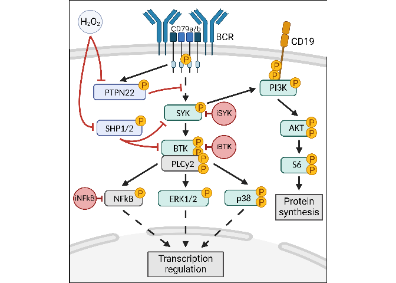
# # Placeholder
# fig1_panelB <- ggplot() +
# geom_blank() +
# scale_x_continuous(limits = c(0, 10)) +
# scale_y_continuous(limits = c(0, 10)) +
# # labs(title = "BCR signaling network") +
# theme_bw() +
# theme(axis.text.x = element_blank(),
# axis.text.y = element_blank(),
# axis.ticks = element_blank(),
# panel.grid = element_blank()) +
# textsize_small
# # fig1_panelB
# PNG
fig1_panelB <- magick::image_read("output/figures/non_R_figs/signaling_states_IDseq.png") %>%
magick::image_ggplot(interpolate = TRUE)
fig1_panelB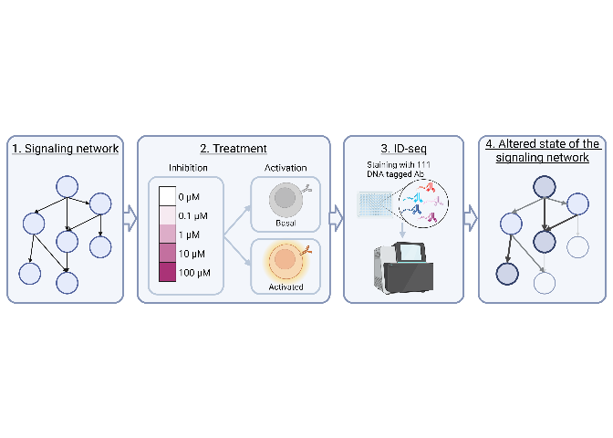
# PNG
fig1_panelB_alt <- magick::image_read("output/figures/non_R_figs/signaling_states_IDseq_square.png") %>%
magick::image_ggplot(interpolate = TRUE)
# fig1_panelB_alt# Select data
fig1C_data <- pca_data %>%
subset(inhibitor == "iBTK" & inhib_text_new != "PBS ctrl")
fig1C_stim_inhib <- c("Basal\nDMSO ctrl",
"Basal\n0.1 uM iBTK", "Basal\n1 uM iBTK", "Basal\n10 uM iBTK", "Basal\n100 uM iBTK",
"Activated\nDMSO ctrl",
"Activated\n0.1 uM iBTK", "Activated\n1 uM iBTK", "Activated\n10 uM iBTK", "Activated\n100 uM iBTK")
fig1C_labels <- c("Basal\nDMSO ctrl", "0.1 uM iBTK", "1 uM", "10 uM", "100 uM",
"Activated\nDMSO ctrl", "0.1 uM iBTK", "1 uM", "10 uM", "100 uM")
fig1C_select_colors <- c("#bdbdbd",
"#cfd9e0", "#bcc9d4", "#a0b3c2", "#90a1ae",
"#737373",
"#bdd7eb", "#9dc4e1", "#7cb0d7", "#5c9dce")
fig1C_select_shape <- c(16,
16, 16, 16, 16,
17,
17, 17, 17, 17)
names(fig1C_labels) <- fig1C_stim_inhib
names(fig1C_select_colors) <- fig1C_stim_inhib
names(fig1C_select_shape) <- fig1C_stim_inhib
# Figure
fig1_panelC <- ggplot(fig1C_data) +
geom_point(aes(x = PC1, y = PC3, shape = stim_inhib, color = stim_inhib), size = 2.5) +
scale_color_manual(values = fig1C_select_colors, breaks = names(fig1C_select_colors), labels = fig1C_labels, name = "Treatment") +
scale_shape_manual(values = fig1C_select_shape, breaks = names(fig1C_select_shape), labels = fig1C_labels, name = "Treatment") +
xlab(paste0("PC1: ", pca_expl_var[1], "% variance")) +
ylab(paste0("PC3: ", pca_expl_var[3], "% variance")) +
theme_bw() +
textsize_small +
theme(panel.grid.minor = element_blank(), legend.key.size = unit(0.4, "cm"), legend.spacing.y = unit(0.5, "cm"), legend.box.spacing = unit(0.1, "cm"), legend.position = "right", legend.justification = "left", axis.title = element_text(size = 8)) +
guides(shape = guide_legend(ncol = 1, byrow = TRUE), color = guide_legend(ncol = 1, byrow = TRUE))
fig1_panelC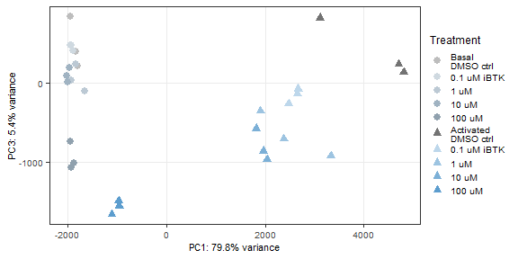
# Idea:
# Visualise proteins contributing to PCs
# Quality of representation: cos2 - size of dot
# Percentage contribution to one PC: contrib - colour of dot
# Select data
data_contrib_2.5p <- as.data.frame(pca_variab$contrib) %>%
dplyr::filter(Dim.1 >= 2.5 | Dim.2 >= 2.5 | Dim.3 >= 2.5) %>% # | Dim.4 >= 1 | Dim.5 >= 1
dplyr::rename(PC1 = Dim.1, PC2 = Dim.2, PC3 = Dim.3, PC4 = Dim.4, PC5 = Dim.5) %>%
dplyr::select(c(PC1, PC2, PC3)) %>%
mutate_all(function(x){x/100}) %>%
as.matrix()
data_contrib_prot <- factor(rownames(data_contrib_2.5p))
data_cos2_2.5p <- as.data.frame(pca_variab$cos2) %>%
rownames_to_column("target_nospace") %>%
dplyr::filter(target_nospace %in% data_contrib_prot) %>%
column_to_rownames("target_nospace") %>%
dplyr::rename(PC1 = Dim.1, PC2 = Dim.2, PC3 = Dim.3, PC4 = Dim.4, PC5 = Dim.5) %>%
dplyr::select(c(PC1, PC2, PC3)) %>%
as.matrix()
# Tidy data format
data_cos2_tidy <- as.data.frame(data_cos2_2.5p) %>%
rownames_to_column("target_nospace") %>%
pivot_longer(2:4, names_to = "PC", values_to = "cos2")
data_contrib_tidy <- as.data.frame(data_contrib_2.5p) %>%
rownames_to_column("target_nospace") %>%
pivot_longer(2:4, names_to = "PC", values_to = "contrib") %>%
mutate(contrib = contrib * 100)
data_contrib_all <- full_join(data_cos2_tidy, data_contrib_tidy) %>%
left_join(distinct(dplyr::select(fig1_data_id, c(target_nospace, target))))
fig1D_prot <- sort(unique(data_contrib_all$target))
fig1D_prot_label <- c("AMPKa1/2\n(T183/T172)", "BLNK (Y84)", "BTK (Y551)", "CD38", "CD79a", "GAPDH", "IgM", "LYN (Y397)", "PKC-b1", "S6 (S235/S236)", "S6 (S240/S244)", "SRC (Y416)", "VAV1 (Y174)", "ZAP70 (Y319)")
# Figure
fig1_panelD <- ggplot() +
geom_point(data = data_contrib_all, aes(x = PC, y = factor(target, levels = rev(fig1D_prot), labels = rev(fig1D_prot_label)), size = cos2, fill = contrib), color = "black", pch = 21) +
scale_size_area(max_size = 4, breaks = c(0, 0.25, 0.5, 0.75, 1), name = "Quality of\nrepresentation\nin PCs") +
scale_fill_gradient(low = "#FEDA8B", high = "#73001a", name = "Percentage\ncontribution\nwithin one PC") + #7f2704 #67000d
labs(x = "", y = "") +
theme_bw() +
theme(legend.key.size = unit(0.2, "cm"), legend.spacing.y = unit(0.1, "cm"), legend.box.spacing = unit(0.1, "cm"), axis.text.y = element_text(size = 6), legend.title = element_text(size = 7), legend.position = "right") +
# guides(size = guide_legend(ncol = 1, byrow = TRUE)) +
textsize_small #+
# theme(legend.title = element_text(size = 8), axis.text.y = element_text(size = 8))
fig1_panelD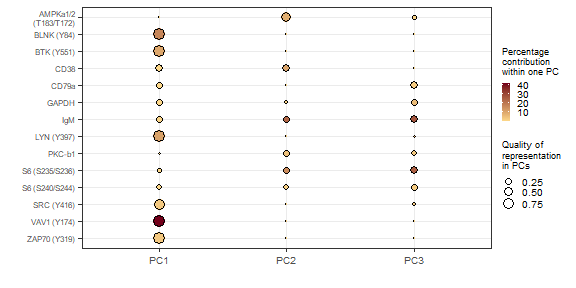
# Select data
fig1E_conc <- c("DMSO ctrl", "100 uM iBTK")
fig1E_label_conc <- c("DMSO\nctrl", "100 uM\niBTK")
fig1E_proteins <- c("VAV1_Y174", "IgM", "S6_S235_S236") #, "BLNK_Y84", "AMPKa1_2_T183_T172", "CD79a"
fig1E_proteins_name <- c("VAV1 (Y174)", "IgM", "S6 (S235/S236)") #, "BLNK (SLP-65) (Y84)", "AMPKa1/2 (T183/T172)", "CD79a (Iga)"
# fig1E_proteins_label <- c("VAV1 (Y174)", "IgM", "S6 (S235/S236)", "BLNK (Y84)", "AMPKa1/2 (T183/T172)", "CD79a")
fig1E_facet_labels <- c("PC1: VAV1 (Y174)", "PC2: IgM", "PC3: S6 (S235/S236)")
fig1E_data <- fig1_data_id %>%
subset(inhibitor == "iBTK" & target_nospace %in% fig1E_proteins & inhib_text_new %in% fig1E_conc) %>%
mutate(target_nospace = factor(target_nospace, levels = fig1E_proteins))
fig1E_mean <- fig1_mean_id %>%
subset(inhibitor == "iBTK" & target_nospace %in% fig1E_proteins & inhib_text_new %in% fig1E_conc)
# Statistics
# Kruskal-Wallis test
fig1E_kruskal <- fig1E_data %>%
group_by(target_nospace) %>%
kruskal_test(counts_norm ~ stim_inhib)
fig1E_kruskal# A tibble: 3 × 7
target_nospace .y. n statistic df p method
* <fct> <chr> <int> <dbl> <int> <dbl> <chr>
1 VAV1_Y174 counts_norm 12 9.97 3 0.0188 Kruskal-Wallis
2 IgM counts_norm 12 8.13 3 0.0434 Kruskal-Wallis
3 S6_S235_S236 counts_norm 12 9.67 3 0.0216 Kruskal-Wallis# Post-hoc Dunn's test (without correction)
fig1E_dunn <- fig1E_data %>%
group_by(target_nospace) %>%
dunn_test(counts_norm ~ stim_inhib, p.adjust.method = "none") %>%
dplyr::filter(
(group1 == "Activated\nDMSO ctrl" & group2 == "Basal\nDMSO ctrl") |
(group1 == "Activated\n100 uM iBTK" & group2 == "Basal\n100 uM iBTK") |
(group1 == "Basal\n100 uM iBTK" & group2 == "Basal\nDMSO ctrl") |
(group1 == "Activated\n100 uM iBTK" & group2 == "Activated\nDMSO ctrl")
) %>%
mutate(group1 = case_when(group1 == "Basal\n100 uM iBTK" ~ "Basal\n100 uM\niBTK",
group1 == "Activated\n100 uM iBTK" ~ "Activated\n100 uM\niBTK",
group1 == "Basal\nDMSO ctrl" ~ "Basal\nDMSO\nctrl",
group1 == "Activated\nDMSO ctrl" ~ "Activated\nDMSO\nctrl",
.default = group1),
group2 = case_when(group2 == "Basal\n100 uM iBTK" ~ "Basal\n100 uM\niBTK",
group2 == "Activated\n100 uM iBTK" ~ "Activated\n100 uM\niBTK",
group2 == "Basal\nDMSO ctrl" ~ "Basal\nDMSO\nctrl",
group2 == "Activated\nDMSO ctrl" ~ "Activated\nDMSO\nctrl",
.default = group2))
fig1E_dunn# A tibble: 12 × 10
target_nospace .y. group1 group2 n1 n2 statistic p p.adj
<fct> <chr> <chr> <chr> <int> <int> <dbl> <dbl> <dbl>
1 VAV1_Y174 counts_norm "Activ… "Acti… 3 3 1.02 0.308 0.308
2 VAV1_Y174 counts_norm "Activ… "Basa… 3 3 -1.92 0.0542 0.0542
3 VAV1_Y174 counts_norm "Activ… "Basa… 3 3 -2.15 0.0315 0.0315
4 VAV1_Y174 counts_norm "Basal… "Basa… 3 3 0.793 0.428 0.428
5 IgM counts_norm "Activ… "Acti… 3 3 -1.59 0.113 0.113
6 IgM counts_norm "Activ… "Basa… 3 3 -1.70 0.0894 0.0894
7 IgM counts_norm "Activ… "Basa… 3 3 -1.25 0.213 0.213
8 IgM counts_norm "Basal… "Basa… 3 3 -1.13 0.258 0.258
9 S6_S235_S236 counts_norm "Activ… "Acti… 3 3 1.81 0.0700 0.0700
10 S6_S235_S236 counts_norm "Activ… "Basa… 3 3 -1.02 0.308 0.308
11 S6_S235_S236 counts_norm "Activ… "Basa… 3 3 -0.566 0.571 0.571
12 S6_S235_S236 counts_norm "Basal… "Basa… 3 3 2.26 0.0235 0.0235
# ℹ 1 more variable: p.adj.signif <chr># Manual stat table (from DEA)
fig1E_manual_stat <- tibble(target_nospace = fig1E_dunn$target_nospace,
.y. = "counts_norm",
group1 = fig1E_dunn$group1,
group2 = fig1E_dunn$group2,
p.adj.signif = c("*", "*", "*", "ns",
"*", "*", "*", "*",
"*", "ns", "ns", "*"),
y.position = rep(c(6500, 6500, 5000), each = 4))
fig1E_manual_stat# A tibble: 12 × 6
target_nospace .y. group1 group2 p.adj.signif y.position
<fct> <chr> <chr> <chr> <chr> <dbl>
1 VAV1_Y174 counts_norm "Activated\n100 uM… "Acti… * 6500
2 VAV1_Y174 counts_norm "Activated\n100 uM… "Basa… * 6500
3 VAV1_Y174 counts_norm "Activated\nDMSO\n… "Basa… * 6500
4 VAV1_Y174 counts_norm "Basal\n100 uM\niB… "Basa… ns 6500
5 IgM counts_norm "Activated\n100 uM… "Acti… * 6500
6 IgM counts_norm "Activated\n100 uM… "Basa… * 6500
7 IgM counts_norm "Activated\nDMSO\n… "Basa… * 6500
8 IgM counts_norm "Basal\n100 uM\niB… "Basa… * 6500
9 S6_S235_S236 counts_norm "Activated\n100 uM… "Acti… * 5000
10 S6_S235_S236 counts_norm "Activated\n100 uM… "Basa… ns 5000
11 S6_S235_S236 counts_norm "Activated\nDMSO\n… "Basa… ns 5000
12 S6_S235_S236 counts_norm "Basal\n100 uM\niB… "Basa… * 5000# Figure
fig1_panelE <- ggplot() +
geom_jitter(data = fig1E_data,
aes(factor(stim_inhib, levels = fig1_stim_inhib, labels = fig1_stim_inhib_label), counts_norm, color = factor(stimulus, levels = fig1_stim)),
alpha = 1, size = 1.5, width = 0.1) +
geom_errorbar(data = fig1E_mean,
aes(factor(stim_inhib, levels = fig1_stim_inhib, labels = fig1_stim_inhib_label),
ymin = counts_norm, ymax = counts_norm,
group = factor(stimulus, levels = fig1_stim),
color = factor(stimulus, levels = fig1_stim)),
width = 0.5, size = 1) +
facet_wrap(vars(factor(target_nospace, levels = fig1E_proteins, labels = fig1E_facet_labels)), nrow = 1, scales = "free_y") +
scale_color_manual(values = colors_stim, breaks = fig1_stim, labels = fig1_label_stim, name = "Stimulus") +
labs(x = element_blank(), y = "Normalised counts") +
scale_y_continuous(expand = c(0.15, 0.15)) +
# coord_cartesian(ylim = c(1500, 10200)) +
theme_bw() +
textsize_small +
theme(panel.grid.minor.y = element_blank(), panel.grid.major.x = element_blank(), legend.key.size = unit(0.5, "cm"), legend.spacing.y = unit(0.2, "cm"), legend.box.spacing = unit(0.1, "cm"), legend.position = "none", legend.justification = "right", axis.text.x = element_text(size = 6.5)) +
stat_pvalue_manual(fig1E_manual_stat, label = "p.adj.signif", tip.length = 0.05,
step.increase = 0.25, group = "target_nospace", step.group.by = "target_nospace", size = 3, vjust = 0.1)
fig1_panelE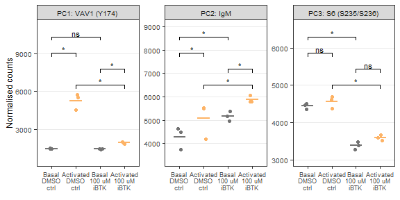
# Combine all panels of the figure
# fig1_AB <- plot_grid(fig1_panelA, fig1_panelB, labels = PANEL_labels[c(1,2)], ncol = 2, rel_widths = c(1, 3.9), scale = 0.98, label_size = 10)
fig1_AB <- plot_grid(fig1_panelA, fig1_panelB_alt, labels = PANEL_labels[c(1,2)], nrow = 1, rel_widths = c(1, 1.35), label_size = 10)
fig1_CD <- plot_grid(fig1_panelC, fig1_panelD, labels = PANEL_labels[c(3,4)], ncol = 2, rel_widths = c(1.4, 1), label_size = 10)
fig1 <- plot_grid(fig1_AB, fig1_CD, fig1_panelE, labels = c(NA, NA, PANEL_labels[c(5)]), ncol = 1, rel_heights = c(1.5, 1.4, 1), label_size = 10)
fig1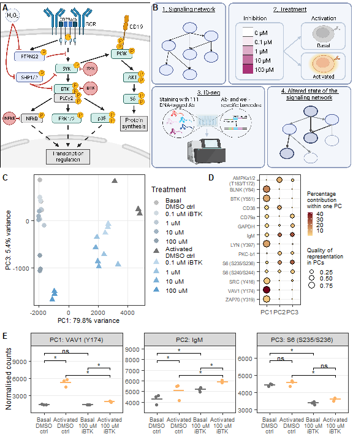
# Save figure as pdf, jpg
ggsave(
fig1,
filename = "output/figures/DLBCL_states/main_fig1.pdf",
width = 6,
height = 7.5,
units = "in",
dpi = 300
)
ggsave(
fig1,
filename = "output/figures/DLBCL_states/main_fig1.jpg",
width = 6,
height = 7.5,
units = "in",
dpi = 300
)B-cell activation and inhibition by iBTK results in distinct signaling states.
# Remove unnecessary files to clear up memory
rm(list = ls(pattern = "fig1"))
rm(list = ls(pattern = "png"))
rm(list = ls(pattern = "results_"))
rm(list = ls(pattern = "volc_"))
rm(list = ls(pattern = "list_"))
rm(list = ls(pattern = "names_"))
rm(list = ls(pattern = "titles_"))
rm(list = ls(pattern = "data_"))
rm(list = ls(pattern = "heat_"))
rm(list = ls(pattern = "rld"))
rm(list = ls(pattern = "pca"))
gc() used (Mb) gc trigger (Mb) max used (Mb)
Ncells 9436998 504.0 16905207 902.9 16905207 902.9
Vcells 32070216 244.7 95666217 729.9 93646971 714.5Network-wide signaling inhibition along different repression axes by iSYK and iNFκB.
Input:
DS108 ID-seq data
PCA on all samples
Count data
# ID-seq data DS108 (counts per well/sample and mean per condition)
fig2_data_id <- read_csv("output/DS108_StimInhibIDseq/IDseq_ann/IDseq_data_sample.csv") %>%
subset(inhibitor != "iPI3Kd" & target_nospace != "BIM" & target_nospace != "Histone_H2AX_S139" & cell_line == "HBL1") %>%
mutate(stim_clean = case_when(stimulus == "PBS" ~ "Basal",
stimulus == "aIg+H2O2" ~ "Activated"),
inhib_new = case_when(inhib_conc == "0 uM (DMSO)" ~ "DMSO ctrl",
inhib_conc == "0 uM (PBS)" ~ "PBS ctrl",
.default = inhibitor),
inhib_text_new = case_when(inhib_conc == "0 uM (DMSO)" ~ "DMSO ctrl",
inhib_conc == "0 uM (PBS)" ~ "PBS ctrl",
.default = inhib_conc_text),
stim_inhib = paste0(stim_clean, "\n", inhib_text_new)) #%>%
# subset(inhib_new != "PBS ctrl")
fig2_mean_id <- read_csv("output/DS108_StimInhibIDseq/IDseq_ann/IDseq_data_condition.csv") %>%
subset(inhibitor != "iPI3Kd" & target_nospace != "BIM" & target_nospace != "Histone_H2AX_S139" & cell_line == "HBL1") %>%
mutate(stim_clean = case_when(stimulus == "PBS" ~ "Basal",
stimulus == "aIg+H2O2" ~ "Activated"),
inhib_new = case_when(inhib_conc == "0 uM (DMSO)" ~ "DMSO ctrl",
inhib_conc == "0 uM (PBS)" ~ "PBS ctrl",
.default = inhibitor),
inhib_text_new = case_when(inhib_conc == "0 uM (DMSO)" ~ "DMSO ctrl",
inhib_conc == "0 uM (PBS)" ~ "PBS ctrl",
.default = inhib_conc_text),
stim_inhib = paste0(stim_clean, "\n", inhib_text_new)) #%>%
# subset(inhib_new != "PBS ctrl")fig2_stim <- c("PBS", "aIg+H2O2")
fig2_label_stim <- c("Basal", "Activated")
fig2_inhib <- c("iBTK", "iSYK", "iNFkB")
# fig2_conc_select <- c("0 uM (DMSO)", "100 uM")
# fig2_label_conc_select <- c("DMSO ctrl", "100 uM")
fig2_conc <- c("0 uM (DMSO)", "0.1 uM", "1 uM", "10 uM", "100 uM")
fig2_label_conc <- c("DMSO\nctrl", "0.1 uM", "1 uM", "10 uM", "100 uM")
fig2_label_conc_alt <- c("0 uM", "0.1 uM", "1 uM", "10 uM", "100 uM")
fig2_meta_cols <- c("plate_well", "plate", "well", "experiment", "cell_line", "stimulus", "stim_clean", "inhibitor", "inhib_new", "inhib_conc_uM", "inhib_conc", "inhib_conc_text", "inhib_text_new", "stim_inhib", "replicate", "description", "descript_rep")# Prepare data for FactoMineR package
# cts_pca: dataframe with wells as row names, proteins as column names, and count data as cell values
# coldata: dataframe with wells as row names and all metadata as columns
cts_pca <- fig2_data_id %>%
dplyr::filter(counts_norm >= 1) %>%
dplyr::select(target_nospace, plate_well, counts_norm) %>%
dplyr::filter(!is.na(counts_norm)) %>%
spread(target_nospace, counts_norm) %>%
replace(is.na(.), 0) %>%
column_to_rownames("plate_well")
# cts_pca <- scale(cts_pca)
coldata <- data.frame(plate_well = rownames(cts_pca)) %>%
left_join(distinct(dplyr::select(fig2_data_id, all_of(fig2_meta_cols)))) %>%
mutate(stimulus = factor(stimulus, levels = fig2_stim),
inhibitor = factor(inhibitor, levels = fig2_inhib),
inhib_conc = factor(inhib_conc, levels = fig2_conc)) #If necessary, make factors of some metadata columns
rownames(coldata) <- coldata$plate_well
# Results
pca_results <- PCA(cts_pca, scale.unit = FALSE, ncp = 5, graph = FALSE)
pca_expl_var <- as.data.frame(get_eigenvalue(pca_results)) %>% # Percentage variance explained by each PC
rownames_to_column("PC") %>%
pull(var = variance.percent, name = PC) %>%
round(digits = 1)
pca_variab <- get_pca_var(pca_results) # Results focused on variables (proteins)
pca_indiv <- get_pca_ind(pca_results) # Results focused on individuals (wells)
pca_data <- as.data.frame(pca_indiv$coord[, 1:3]) %>%
rownames_to_column("plate_well") %>%
dplyr::rename(PC1 = Dim.1, PC2 = Dim.2, PC3 = Dim.3) %>%
left_join(coldata)# Select data
# fig2A_colors <- c("DMSO ctrl" = "#bdbdbd", "100 uM iSYK" = "#9dce5c", "100 uM iBTK" = "#5c9dce", "100 uM iNFkB" = "#ce5c9d")
pca_data_select <- pca_data %>%
dplyr::filter(!(stimulus == "PBS" & inhib_conc %in% fig2_conc[2:5])) %>%
drop_na() %>%
dplyr::arrange(factor(stimulus, levels = fig2_stim), factor(inhibitor, levels = fig2_inhib))
pca_data_iSYK <- pca_data_select %>%
dplyr::filter(inhib_new == "DMSO ctrl" | inhib_new == "iBTK" | inhib_new == "iSYK") %>%
mutate(inhib_plot = "iSYK vs iBTK")
pca_data_iNFkB <- pca_data_select %>%
dplyr::filter(inhib_new == "DMSO ctrl" | inhib_new == "iBTK" | inhib_new == "iNFkB") %>%
mutate(inhib_plot = "iNFkB vs iBTK")
pca_data_select_all <- full_join(pca_data_iSYK, pca_data_iNFkB)
pca_legend_shapes <- c(16, 16, 16,
17, 17, 17, 17, 17,
17, 17, 17, 17, 17,
17, 17, 17, 17, 17)
pca_legend_values <- c("#bdbdbd", "#bdbdbd", "#bdbdbd",
"#737373", "#d7ebbd", "#c4e19d", "#b0d77c", "#9dce5c",
"#737373", "#bdd7eb", "#9dc4e1", "#7cb0d7", "#5c9dce",
"#737373", "#ebbdd7", "#e19dc4", "#d77cb0", "#ce5c9d")
pca_legend_levels <- c("0 uM iSYK (DMSO) PBS", "0 uM iBTK (DMSO) PBS", "0 uM iNFkB (DMSO) PBS",
"0 uM iSYK (DMSO) aIg+H2O2", "0.1 uM iSYK aIg+H2O2", "1 uM iSYK aIg+H2O2", "10 uM iSYK aIg+H2O2", "100 uM iSYK aIg+H2O2",
"0 uM iBTK (DMSO) aIg+H2O2", "0.1 uM iBTK aIg+H2O2", "1 uM iBTK aIg+H2O2", "10 uM iBTK aIg+H2O2", "100 uM iBTK aIg+H2O2",
"0 uM iNFkB (DMSO) aIg+H2O2", "0.1 uM iNFkB aIg+H2O2", "1 uM iNFkB aIg+H2O2", "10 uM iNFkB aIg+H2O2", "100 uM iNFkB aIg+H2O2")
names(pca_legend_shapes) <- pca_legend_levels
names(pca_legend_values) <- pca_legend_levels
pca_legend_breaks <- c("0 uM iBTK (DMSO) PBS", "0 uM iBTK (DMSO) aIg+H2O2",
"0.1 uM iBTK aIg+H2O2", "1 uM iBTK aIg+H2O2", "10 uM iBTK aIg+H2O2", "100 uM iBTK aIg+H2O2",
"100 uM iSYK aIg+H2O2", "100 uM iNFkB aIg+H2O2")
pca_legend_labels <- c("0 uM - Basal", "0 uM - Activated", "0.1 uM - Activated", "1 uM - Activated", "10 uM - Activated", "100 uM - Activated")
pca_legend_labels_alt <- c("0 uM (basal)", "0 uM (activated)",
"0.1 uM iBTK", "1 uM iBTK", "10 uM iBTK", "100 uM iBTK",
"iSYK", "iNFkB")
# Figure
fig2_panelA <- ggplot(pca_data_select_all) +
geom_point(aes(x = PC1, y = PC3,
shape = paste(inhib_conc_text, stimulus),
color = paste(inhib_conc_text, stimulus),
alpha = inhib_new),
size = 3) +
scale_color_manual(values = pca_legend_values,
breaks = pca_legend_breaks,
labels = pca_legend_labels_alt,
name = "Inhibitor\nconc.") +
scale_shape_manual(values = pca_legend_shapes,
breaks = pca_legend_breaks,
labels = pca_legend_labels_alt,
name = "Inhibitor\nconc.") +
scale_alpha_manual(values = c(0.8, 0.4, 1, 1)) +
facet_wrap(vars(factor(inhib_plot, levels = c("iSYK vs iBTK", "iNFkB vs iBTK"))), ncol = 2) +
xlab(paste0("PC1: ", pca_expl_var[1], "% variance")) +
ylab(paste0("PC3: ", pca_expl_var[3], "% variance")) +
theme_bw() +
textsize_small +
theme(panel.grid.minor = element_blank(), legend.key.size = unit(0.4, "cm"), legend.spacing.y = unit(0.2, "cm"), legend.box.spacing = unit(0.1, "cm"), legend.position = "right", legend.justification = "right") +
guides(alpha = "none")
fig2_panelA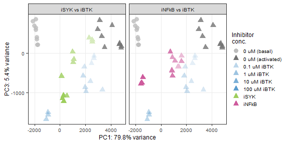
# Select data
fig2B_prot <- c(
"JAK1_Y1022_Y1023"
# "IKKa_b_S176_S180"
# "CD79a_Y182"
# "S6_S235_S236"
# "S6_S240_S244"
# "BLNK_Y84"
# "LYN_Y397"
# "MAPK_p38_T180_Y182"
# "CDK1_T14_Y15"
# "PYK2_Y402"
)
fig2B_prot_label <- c(
"JAK1 (Y1022/Y1023)"
# "IKKa/b (S176/S180)"
# "CD79a (Y182)"
# "S6 (S235/S236)"
)
fig2B_data <- fig2_data_id %>%
subset(target_nospace %in% fig2B_prot & inhib_conc %in% fig2_conc & cell_line == "HBL1")
fig2B_mean <- fig2_mean_id %>%
subset(target_nospace %in% fig2B_prot & inhib_conc %in% fig2_conc & cell_line == "HBL1")
# Figure
fig2_panelB <- ggplot() +
geom_point(data = fig2B_data,
aes(factor(inhib_conc, levels = fig2_conc, labels = fig2_label_conc),
counts_norm,
color = stimulus,
shape = stimulus
),
alpha = 1, size = 0.75) +
geom_line(data = fig2B_mean,
aes(factor(inhib_conc, levels = fig2_conc, labels = fig2_label_conc),
counts_norm,
group = paste(inhibitor, stimulus),
color = stimulus
),
size = 0.5) +
facet_wrap(vars(factor(inhibitor, levels = fig2_inhib)), ncol = 1) +
# facet_grid(target_nospace~inhibitor, scales = "free_y") +
scale_shape_manual(values = c(17, 16), breaks = fig2_stim, labels = fig2_label_stim, name = "Stimulus") +
scale_color_manual(values = colors_stim, breaks = fig2_stim, labels = fig2_label_stim, name = "Stimulus") +
labs(x = "Inhibitor conc.", y = "Normalised counts", title = fig2B_prot_label) +
theme_bw() +
textsize_small +
theme(panel.grid.minor.y = element_blank(), panel.grid.major.x = element_blank(),
legend.key.size = unit(0.3, "cm"), legend.spacing.y = unit(0.2, "cm"), legend.box.spacing = unit(0.1, "cm"), legend.position = "bottom", strip.text.x = element_text(margin = margin(0.05, 0, 0.05, 0, "cm")),
axis.text.x = element_text(size = 6), axis.title = element_text(size = 8), legend.title = element_text(size = 8), plot.title = element_text(size = 8)) +
guides(shape = guide_legend(nrow = 2, byrow = TRUE), color = guide_legend(nrow = 2, byrow = TRUE))
fig2_panelB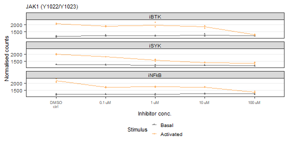
# Select data
fig2C_prot <- c(
# "JAK1_Y1022_Y1023"
# "IKKa_b_S176_S180"
"CD79a_Y182"
# "S6_S235_S236"
# "S6_S240_S244"
# "BLNK_Y84"
# "LYN_Y397"
# "MAPK_p38_T180_Y182"
# "CDK1_T14_Y15"
# "PYK2_Y402"
)
fig2C_prot_label <- c(
# "JAK1 (Y1022/Y1023)"
# "IKKa/b (S176/S180)"
"CD79a (Y182)"
# "S6 (S235/S236)"
)
fig2C_data <- fig2_data_id %>%
subset(target_nospace %in% fig2C_prot & inhib_conc %in% fig2_conc & cell_line == "HBL1")
fig2C_mean <- fig2_mean_id %>%
subset(target_nospace %in% fig2C_prot & inhib_conc %in% fig2_conc & cell_line == "HBL1")
# Figure
fig2_panelC <- ggplot() +
geom_point(data = fig2C_data,
aes(factor(inhib_conc, levels = fig2_conc, labels = fig2_label_conc),
counts_norm,
color = stimulus,
shape = stimulus
),
alpha = 1, size = 0.75) +
geom_line(data = fig2C_mean,
aes(factor(inhib_conc, levels = fig2_conc, labels = fig2_label_conc),
counts_norm,
group = paste(inhibitor, stimulus),
color = stimulus
),
size = 0.5) +
facet_wrap(vars(factor(inhibitor, levels = fig2_inhib)), ncol = 1) +
# facet_grid(target_nospace~inhibitor, scales = "free_y") +
scale_shape_manual(values = c(17, 16), breaks = fig2_stim, labels = fig2_label_stim, name = "Stimulus") +
scale_color_manual(values = colors_stim, breaks = fig2_stim, labels = fig2_label_stim, name = "Stimulus") +
labs(x = "Inhibitor conc.", y = "Normalised counts", title = fig2C_prot_label) +
theme_bw() +
textsize_small +
theme(panel.grid.minor.y = element_blank(), panel.grid.major.x = element_blank(),
legend.key.size = unit(0.3, "cm"), legend.spacing.y = unit(0.2, "cm"), legend.box.spacing = unit(0.1, "cm"), legend.position = "none", strip.text.x = element_text(margin = margin(0.05, 0, 0.05, 0, "cm")),
axis.text.x = element_text(size = 6), axis.title = element_text(size = 8), legend.title = element_text(size = 8), plot.title = element_text(size = 8)) +
guides(shape = guide_legend(nrow = 2, byrow = TRUE), color = guide_legend(nrow = 2, byrow = TRUE))
fig2_panelC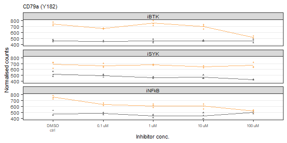
# Select data
fig2D_prot <- c(
# "JAK1_Y1022_Y1023"
# "IKKa_b_S176_S180"
# "CD79a_Y182"
"S6_S235_S236"
# "CREB_S133"
# "S6_S240_S244"
# "BLNK_Y84"
# "LYN_Y397"
# "MAPK_p38_T180_Y182"
# "CDK1_T14_Y15"
# "PYK2_Y402"
)
fig2D_prot_label <- c(
# "JAK1 (Y1022/Y1023)"
# "IKKa/b (S176/S180)"
# "CD79a (Y182)"
"S6 (S235/S236)"
# "CREB (S133)"
)
fig2D_data <- fig2_data_id %>%
subset(target_nospace %in% fig2D_prot & inhib_conc %in% fig2_conc & cell_line == "HBL1")
fig2D_mean <- fig2_mean_id %>%
subset(target_nospace %in% fig2D_prot & inhib_conc %in% fig2_conc & cell_line == "HBL1")
# Figure
fig2_panelD <- ggplot() +
geom_point(data = fig2D_data,
aes(factor(inhib_conc, levels = fig2_conc, labels = fig2_label_conc),
counts_norm,
color = stimulus,
shape = stimulus
),
alpha = 1, size = 0.75) +
geom_line(data = fig2D_mean,
aes(factor(inhib_conc, levels = fig2_conc, labels = fig2_label_conc),
counts_norm,
group = paste(inhibitor, stimulus),
color = stimulus
),
size = 0.5) +
facet_wrap(vars(factor(inhibitor, levels = fig2_inhib)), ncol = 1) +
# facet_grid(target_nospace~inhibitor, scales = "free_y") +
scale_shape_manual(values = c(17, 16), breaks = fig2_stim, labels = fig2_label_stim, name = "Stimulus") +
scale_color_manual(values = colors_stim, breaks = fig2_stim, labels = fig2_label_stim, name = "Stimulus") +
labs(x = "Inhibitor conc.", y = "Normalised counts", title = fig2D_prot_label) +
theme_bw() +
textsize_small +
theme(panel.grid.minor.y = element_blank(), panel.grid.major.x = element_blank(),
legend.key.size = unit(0.3, "cm"), legend.spacing.y = unit(0.2, "cm"), legend.box.spacing = unit(0.1, "cm"), legend.position = "none", strip.text.x = element_text(margin = margin(0.05, 0, 0.05, 0, "cm")),
axis.text.x = element_text(size = 6), axis.title = element_text(size = 8), legend.title = element_text(size = 8), plot.title = element_text(size = 8)) +
guides(shape = guide_legend(nrow = 2, byrow = TRUE), color = guide_legend(nrow = 2, byrow = TRUE))
fig2_panelD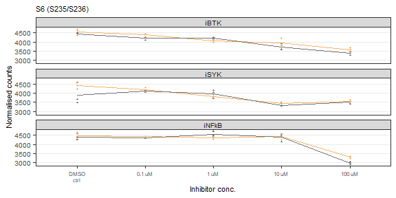
# Select data
fig2E_prot <- c(
# "JAK1_Y1022_Y1023"
"IKKa_b_S176_S180"
# "CD79a_Y182"
# "S6_S235_S236"
# "S6_S240_S244"
# "BLNK_Y84"
# "LYN_Y397"
# "MAPK_p38_T180_Y182"
# "CDK1_T14_Y15"
# "PYK2_Y402"
)
fig2E_prot_label <- c(
# "JAK1 (Y1022/Y1023)"
"IKKa/b (S176/S180)"
# "CD79a (Y182)"
# "S6 (S235/S236)"
)
fig2E_data <- fig2_data_id %>%
subset(target_nospace %in% fig2E_prot & inhib_conc %in% fig2_conc & cell_line == "HBL1")
fig2E_mean <- fig2_mean_id %>%
subset(target_nospace %in% fig2E_prot & inhib_conc %in% fig2_conc & cell_line == "HBL1")
# Figure
fig2_panelE <- ggplot() +
geom_point(data = fig2E_data,
aes(factor(inhib_conc, levels = fig2_conc, labels = fig2_label_conc),
counts_norm,
color = stimulus,
shape = stimulus
),
alpha = 1, size = 0.75) +
geom_line(data = fig2E_mean,
aes(factor(inhib_conc, levels = fig2_conc, labels = fig2_label_conc),
counts_norm,
group = paste(inhibitor, stimulus),
color = stimulus
),
size = 0.5) +
facet_wrap(vars(factor(inhibitor, levels = fig2_inhib)), ncol = 1) +
# facet_grid(target_nospace~inhibitor, scales = "free_y") +
scale_shape_manual(values = c(17, 16), breaks = fig2_stim, labels = fig2_label_stim, name = "Stimulus") +
scale_color_manual(values = colors_stim, breaks = fig2_stim, labels = fig2_label_stim, name = "Stimulus") +
labs(x = "Inhibitor conc.", y = "Normalised counts", title = fig2E_prot_label) +
theme_bw() +
textsize_small +
theme(panel.grid.minor.y = element_blank(), panel.grid.major.x = element_blank(),
legend.key.size = unit(0.3, "cm"), legend.spacing.y = unit(0.2, "cm"), legend.box.spacing = unit(0.1, "cm"), legend.position = "none", strip.text.x = element_text(margin = margin(0.05, 0, 0.05, 0, "cm")),
axis.text.x = element_text(size = 6), axis.title = element_text(size = 8), legend.title = element_text(size = 8), plot.title = element_text(size = 8)) +
guides(shape = guide_legend(nrow = 2, byrow = TRUE), color = guide_legend(nrow = 2, byrow = TRUE))
fig2_panelE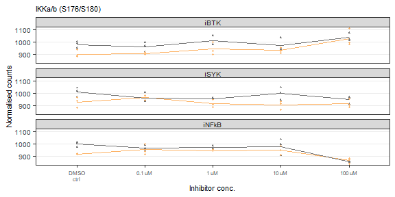
# Combine all panels of the figure
fig2_BCDE <- plot_grid(fig2_panelB, fig2_panelC, fig2_panelD, labels = PANEL_labels[c(2:4)], nrow = 1, rel_widths = c(1, 1, 1), label_size = 10, align = "h")
fig2 <- plot_grid(fig2_panelA, fig2_BCDE, labels = PANEL_labels[c(1)], ncol = 1, rel_heights = c(1, 1.4), label_size = 10)
fig2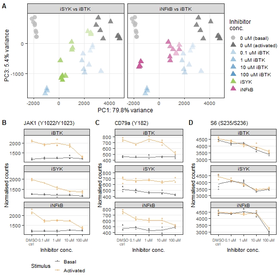
# Save figure as pdf, jpg
ggsave(
fig2,
filename = "output/figures/DLBCL_states/main_fig2.pdf",
width = 6,
height = 6.5,
units = "in",
dpi = 300
)
ggsave(
fig2,
filename = "output/figures/DLBCL_states/main_fig2.jpg",
width = 6,
height = 6.5,
units = "in",
dpi = 300
)Network-wide signaling inhibition along different repression axes by iSYK and iNFκB.
# Remove unnecessary files to clear up memory
rm(list = ls(pattern = "fig2"))
rm(list = ls(pattern = "png"))
rm(list = ls(pattern = "results_"))
rm(list = ls(pattern = "volc_"))
rm(list = ls(pattern = "list_"))
rm(list = ls(pattern = "names_"))
rm(list = ls(pattern = "titles_"))
rm(list = ls(pattern = "data_"))
rm(list = ls(pattern = "heat_"))
rm(list = ls(pattern = "rld"))
rm(list = ls(pattern = "pca"))
gc() used (Mb) gc trigger (Mb) max used (Mb)
Ncells 9415254 502.9 16905207 902.9 16905207 902.9
Vcells 16534097 126.2 76532974 584.0 93646971 714.5Inhibitor combination treatments effectively induce repressed signaling states.
Input:
DS113 ID-seq data
# ID-seq data DS113 (counts per well/sample and mean per condition)
fig3_data_id <- read_csv("output/DS113_InhibCombiIDseq/IDseq_ann/IDseq_data_sample.csv") %>%
subset(inhibitor != "iPI3Kd" & target_nospace != "BIM" & target_nospace != "Histone_H2AX_S139" & cell_line == "HBL1") %>%
mutate(stim_inhib = paste0(stim_clean, "\n", inhib_text_new)) #%>%
# subset(inhib_new != "PBS ctrl")
fig3_mean_id <- read_csv("output/DS113_InhibCombiIDseq/IDseq_ann/IDseq_data_condition.csv") %>%
subset(inhibitor != "iPI3Kd" & target_nospace != "BIM" & target_nospace != "Histone_H2AX_S139" & cell_line == "HBL1") %>%
mutate(stim_inhib = paste0(stim_clean, "\n", inhib_text_new)) #%>%
# subset(inhib_new != "PBS ctrl")fig3_stim <- c("PBS", "aIg+H2O2")
fig3_label_stim <- c("Basal", "Activated")
fig3_legend_label <- "iSYK + iBTK + iNFkB"
fig3_inhib_group <- c("DMSO ctrl", "single", "two", "three_equal", "three_mix")
fig3_inhib <- c("DMSO ctrl",
"iBTK", "iSYK", "iNFkB",
"iSYK + iBTK", "iBTK + iNFkB", "iSYK +iNFkB",
"iSYK + iBTK + iNFkB")
fig3_label_inhib <- c("DMSO ctrl",
"iBTK", "iSYK", "iNFkB",
"iBTK+ iSYK", "iBTK + iNFkB", "iSYK +iNFkB",
"iBTK + iSYK + iNFkB")
fig3_conc_single <- c(0, 1, 2.5, 5, 10)
fig3_conc_all1 <- c("0 + 0 + 0 uM",
"0 + 10 + 0 uM", "10 + 0 + 0 uM", "0 + 0 + 10 uM",
"2.5 + 2.5 + 0 uM", "0 + 2.5 + 2.5 uM", "2.5 + 0 + 2.5 uM",
"1 + 1 + 1 uM", "2.5 + 2.5 + 2.5 uM", "10 + 10 + 10 uM",
"1 + 5 + 1 uM", "5 + 1 + 1 uM", "1 + 1 + 5 uM",
"10 + 10 + 10 uM (nostain)")
fig3_conc_all2 <- c("DMSO ctrl",
"10 uM iBTK", "10 uM iSYK", "10 uM iNFkB",
"2.5 uM of iSYK + iBTK", "2.5 uM of iBTK + iNFkB", "2.5 uM of iSYK + iNFkB",
"1 uM of iSYK + iBTK + iNFkB", "2.5 uM of iSYK + iBTK + iNFkB", "10 uM of iSYK + iBTK + iNFkB",
"5 uM iBTK + 1 uM of iSYK + iNFkB", "5 uM iSYK + 1 uM of iBTK + iNFkB", "5 uM iNFkB + 1 uM of iSYK + iBTK")
fig3_meta_cols <- c("plate_well", "plate", "well", "experiment", "cell_line", "stimulus", "stim_clean", "inhibitor", "inhib_new", "inhib_conc", "inhib_conc_new", "inhib_group", "iSYK_conc_uM", "iBTK_conc_uM", "iNFkB_conc_uM", "inhib_conc_text", "inhib_text_new", "stim_inhib", "replicate", "description", "descript_rep")# Prepare data for FactoMineR package
# cts_pca: dataframe with wells as row names, proteins as column names, and count data as cell values
# coldata: dataframe with wells as row names and all metadata as columns
cts_pca <- fig3_data_id %>%
dplyr::filter(counts_norm >= 1) %>%
dplyr::select(target_nospace, plate_well, counts_norm) %>%
dplyr::filter(!is.na(counts_norm)) %>%
spread(target_nospace, counts_norm) %>%
replace(is.na(.), 0) %>%
column_to_rownames("plate_well")
# cts_pca <- scale(cts_pca)
coldata <- data.frame(plate_well = rownames(cts_pca)) %>%
left_join(distinct(dplyr::select(fig3_data_id, all_of(fig3_meta_cols)))) %>%
mutate(stimulus = factor(stimulus, levels = fig3_stim),
inhibitor = factor(inhibitor, levels = fig3_inhib),
inhib_conc = factor(inhib_conc, levels = fig3_conc_all1)) #If necessary, make factors of some metadata columns
rownames(coldata) <- coldata$plate_well
# Results
pca_results <- PCA(cts_pca, scale.unit = FALSE, ncp = 5, graph = FALSE)
pca_expl_var <- as.data.frame(get_eigenvalue(pca_results)) %>% # Percentage variance explained by each PC
rownames_to_column("PC") %>%
pull(var = variance.percent, name = PC) %>%
round(digits = 1)
pca_variab <- get_pca_var(pca_results) # Results focused on variables (proteins)
pca_indiv <- get_pca_ind(pca_results) # Results focused on individuals (wells)
pca_data <- as.data.frame(pca_indiv$coord[, 1:3]) %>%
rownames_to_column("plate_well") %>%
dplyr::rename(PC1 = Dim.1, PC2 = Dim.2, PC3 = Dim.3) %>%
# gather(key = component, value = PC_value, -plate_well) %>%
left_join(coldata)PCA visualisation of the DMSO ctrl and single inhibitor treatments
# Data
fig3A_group_select <- c("DMSO ctrl", "single")
fig3A_data <- pca_data %>%
dplyr::filter(inhib_group %in% fig3A_group_select)
# fig3_colors <- c("DMSO ctrl" = "#bdbdbd", "100 uM iSYK" = "#9dce5c", "100 uM iBTK" = "#5c9dce", "100 uM iNFkB" = "#ce5c9d")
pca_conditions <- c("Basal\nDMSO ctrl", "Activated\nDMSO ctrl",
"Activated\n10 uM iBTK", "Activated\n10 uM iSYK", "Activated\n10 uM iNFkB",
"Activated\n2.5 uM of iSYK + iBTK", "Activated\n2.5 uM of iBTK + iNFkB", "Activated\n2.5 uM of iSYK + iNFkB",
"Activated\n1 uM of iSYK + iBTK + iNFkB", "Activated\n2.5 uM of iSYK + iBTK + iNFkB", "Activated\n10 uM of iSYK + iBTK + iNFkB", "Basal\n10 uM of iSYK + iBTK + iNFkB",
"Activated\n5 uM iBTK + 1 uM of iSYK + iNFkB", "Activated\n5 uM iSYK + 1 uM of iBTK + iNFkB", "Activated\n5 uM iNFkB + 1 uM of iSYK + iBTK")
pca_legend_alpha <- c("DMSO ctrl" = 0.8, "single" = 0.4,
"two" = 1, "three_equal" = 1, "three_mix" = 1)
pca_legend_shapes <- c(16, 17,
17, 17, 17,
17, 17, 17,
17, 17, 17, 16,
17, 17, 17)
pca_legend_values <- c("#bdbdbd", "#737373",
"#5c9dce", "#9dce5c", "#ce5c9d",
"#5cce8d", "#8d5cce", "#ce8d5c",
"#d3bceb", "#ae82da", "#8351b6", "#857892",
"#729cb9", "#9bb677", "#b6779b")
names(pca_legend_shapes) <- pca_conditions
names(pca_legend_values) <- pca_conditions
pca_legend_breaks <- c(
"Basal\nDMSO ctrl",
"Activated\nDMSO ctrl",
"Activated\n10 uM iBTK",
"Activated\n10 uM iSYK",
"Activated\n10 uM iNFkB",
"Activated\n2.5 uM of iSYK + iBTK",
"Activated\n2.5 uM of iBTK + iNFkB",
"Activated\n2.5 uM of iSYK + iNFkB",
"Activated\n1 uM of iSYK + iBTK + iNFkB",
"Activated\n2.5 uM of iSYK + iBTK + iNFkB",
"Activated\n10 uM of iSYK + iBTK + iNFkB",
"Basal\n10 uM of iSYK + iBTK + iNFkB",
"Activated\n5 uM iBTK + 1 uM of iSYK + iNFkB",
"Activated\n5 uM iSYK + 1 uM of iBTK + iNFkB",
"Activated\n5 uM iNFkB + 1 uM of iSYK + iBTK"
)
pca_legend_labels <- c(
"Basal\nDMSO ctrl" = "- - -\n(DMSO basal)",
"Activated\nDMSO ctrl" = "- - -\n(DMSO activated)",
"Activated\n10 uM iBTK" = "10 - -",
"Activated\n10 uM iSYK" = "- 10 -",
"Activated\n10 uM iNFkB" = "- - 10",
"Activated\n2.5 uM of iSYK + iBTK" = "2.5 2.5 -",
"Activated\n2.5 uM of iBTK + iNFkB" = "2.5 - 2.5",
"Activated\n2.5 uM of iSYK + iNFkB" = "- 2.5 2.5",
"Activated\n1 uM of iSYK + iBTK + iNFkB" = "1 1 1",
"Activated\n2.5 uM of iSYK + iBTK + iNFkB" = "2.5 2.5 2.5",
"Activated\n10 uM of iSYK + iBTK + iNFkB" = "10 10 10",
"Basal\n10 uM of iSYK + iBTK + iNFkB" = "10 10 10\n(basal)",
"Activated\n5 uM iBTK + 1 uM of iSYK + iNFkB" = "5 1 1",
"Activated\n5 uM iSYK + 1 uM of iBTK + iNFkB" = "1 5 1",
"Activated\n5 uM iNFkB + 1 uM of iSYK + iBTK" = "1 1 5"
)
pca_legend_title <- " Treatment\n iBTK + iSYK + iNFkB\n (uM)"
# Figure
fig3_panelA <- ggplot(fig3A_data) +
geom_point(aes(x = PC1, y = PC2,
shape = stim_inhib,
color = stim_inhib), #alpha = inhib_group
size = 2) +
scale_color_manual(values = pca_legend_values,
breaks = pca_legend_breaks,
labels = pca_legend_labels,
name = pca_legend_title) +
scale_shape_manual(values = pca_legend_shapes,
breaks = pca_legend_breaks,
labels = pca_legend_labels,
name = pca_legend_title) +
facet_wrap(vars(factor(experiment, labels = "Single inhibitor")), ncol = 1) +
coord_cartesian(xlim = c(-2300, 6400), ylim = c(-3400, 1900), expand = FALSE) +
xlab(paste0("PC1 (", pca_expl_var[1], "%)")) +
ylab(paste0("PC2 (", pca_expl_var[2], "%)")) +
theme_bw() +
textsize_small +
theme(panel.grid.minor = element_blank(), legend.key.size = unit(0.4, "cm"), legend.spacing.y = unit(0.2, "cm"), legend.box.spacing = unit(0.1, "cm"), legend.position = "none", legend.justification = "left",
axis.title = element_text(size = 7), legend.title = element_text(size = 7), legend.text = element_text(size = 7), strip.text.x = element_text(margin = margin(0.1, 0, 0.1, 0, "cm"))) +
# guides(alpha = "none", shape = guide_legend(ncol = 1, byrow = TRUE), color = guide_legend(ncol = 1, byrow = TRUE))
guides(alpha = "none")
fig3_panelA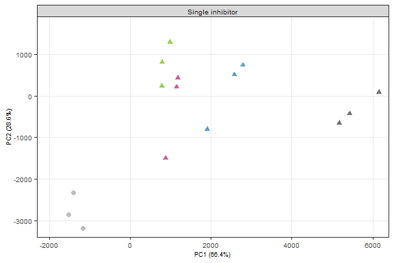
PCA visualisation of the DMSO ctrl and two inhibitor treatments
# Data
fig3B_group_select <- c("DMSO ctrl", "single", "two")
fig3B_data <- pca_data %>%
dplyr::filter(inhib_group %in% fig3B_group_select)
pca_legend_breaks <- c(
"Basal\nDMSO ctrl",
"Activated\nDMSO ctrl",
# "Activated\n10 uM iBTK",
# "Activated\n10 uM iSYK",
# "Activated\n10 uM iNFkB",
"Activated\n2.5 uM of iSYK + iBTK",
"Activated\n2.5 uM of iBTK + iNFkB",
"Activated\n2.5 uM of iSYK + iNFkB"
# "Activated\n1 uM of iSYK + iBTK + iNFkB",
# "Activated\n2.5 uM of iSYK + iBTK + iNFkB",
# "Activated\n10 uM of iSYK + iBTK + iNFkB",
# "Basal\n10 uM of iSYK + iBTK + iNFkB",
# "Activated\n5 uM iBTK + 1 uM of iSYK + iNFkB",
# "Activated\n5 uM iSYK + 1 uM of iBTK + iNFkB",
# "Activated\n5 uM iNFkB + 1 uM of iSYK + iBTK"
)
pca_legend_labels <- c(
"Basal\nDMSO ctrl" = "- - -\n(DMSO basal)",
"Activated\nDMSO ctrl" = "- - -\n(DMSO activated)",
# "Activated\n10 uM iBTK" = "10 - -",
# "Activated\n10 uM iSYK" = "- 10 -",
# "Activated\n10 uM iNFkB" = "- - 10",
"Activated\n2.5 uM of iSYK + iBTK" = "2.5 2.5 -",
"Activated\n2.5 uM of iBTK + iNFkB" = "2.5 - 2.5",
"Activated\n2.5 uM of iSYK + iNFkB" = "- 2.5 2.5"
# "Activated\n1 uM of iSYK + iBTK + iNFkB" = "1 1 1",
# "Activated\n2.5 uM of iSYK + iBTK + iNFkB" = "2.5 2.5 2.5",
# "Activated\n10 uM of iSYK + iBTK + iNFkB" = "10 10 10",
# "Basal\n10 uM of iSYK + iBTK + iNFkB" = "10 10 10\n(basal)",
# "Activated\n5 uM iBTK + 1 uM of iSYK + iNFkB" = "5 1 1",
# "Activated\n5 uM iSYK + 1 uM of iBTK + iNFkB" = "1 5 1",
# "Activated\n5 uM iNFkB + 1 uM of iSYK + iBTK" = "1 1 5"
)
# Figure
fig3_panelB <- ggplot(fig3B_data) +
geom_point(aes(x = PC1, y = PC2,
shape = stim_inhib,
color = stim_inhib,
alpha = inhib_group), #alpha = inhib_group
size = 2) +
scale_color_manual(values = pca_legend_values,
breaks = pca_legend_breaks,
labels = pca_legend_labels,
name = pca_legend_title) +
scale_shape_manual(values = pca_legend_shapes,
breaks = pca_legend_breaks,
labels = pca_legend_labels,
name = pca_legend_title) +
scale_alpha_manual(values = pca_legend_alpha) +
facet_wrap(vars(factor(experiment, labels = "Two inhibitors")), ncol = 1) +
coord_cartesian(xlim = c(-2300, 6400), ylim = c(-3400, 1900), expand = FALSE) +
xlab(paste0("PC1 (", pca_expl_var[1], "%)")) +
ylab(paste0("PC2 (", pca_expl_var[2], "%)")) +
theme_bw() +
textsize_small +
theme(panel.grid.minor = element_blank(), legend.key.size = unit(0.4, "cm"), legend.spacing.y = unit(0.2, "cm"), legend.box.spacing = unit(0.1, "cm"), legend.position = "none", legend.justification = "left",
axis.title = element_text(size = 7), legend.title = element_text(size = 7), legend.text = element_text(size = 7), strip.text.x = element_text(margin = margin(0.1, 0, 0.1, 0, "cm"))) +
# guides(alpha = "none", shape = guide_legend(ncol = 1, byrow = TRUE), color = guide_legend(ncol = 1, byrow = TRUE))
guides(alpha = "none")
fig3_panelB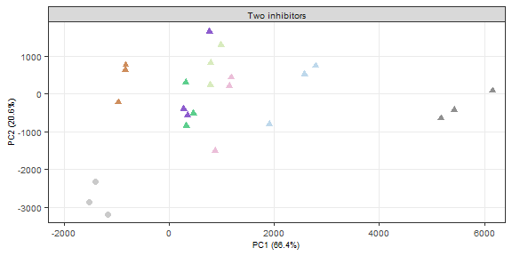
PCA visualisation of the DMSO ctrl and three equal inhibitor treatments
# Data
fig3C_group_select <- c("DMSO ctrl", "single", "three_equal")
fig3C_data <- pca_data %>%
dplyr::filter(inhib_group %in% fig3C_group_select & stim_inhib != "Basal\n10 uM of iSYK + iBTK + iNFkB")
pca_legend_breaks <- c(
"Basal\nDMSO ctrl",
"Activated\nDMSO ctrl",
# "Activated\n10 uM iBTK",
# "Activated\n10 uM iSYK",
# "Activated\n10 uM iNFkB",
# "Activated\n2.5 uM of iSYK + iBTK",
# "Activated\n2.5 uM of iBTK + iNFkB",
# "Activated\n2.5 uM of iSYK + iNFkB",
"Activated\n1 uM of iSYK + iBTK + iNFkB",
"Activated\n2.5 uM of iSYK + iBTK + iNFkB",
"Activated\n10 uM of iSYK + iBTK + iNFkB"
# "Basal\n10 uM of iSYK + iBTK + iNFkB",
# "Activated\n5 uM iBTK + 1 uM of iSYK + iNFkB",
# "Activated\n5 uM iSYK + 1 uM of iBTK + iNFkB",
# "Activated\n5 uM iNFkB + 1 uM of iSYK + iBTK"
)
pca_legend_labels <- c(
"Basal\nDMSO ctrl" = "- - -\n(DMSO basal)",
"Activated\nDMSO ctrl" = "- - -\n(DMSO activated)",
# "Activated\n10 uM iBTK" = "10 - -",
# "Activated\n10 uM iSYK" = "- 10 -",
# "Activated\n10 uM iNFkB" = "- - 10",
# "Activated\n2.5 uM of iSYK + iBTK" = "2.5 2.5 -",
# "Activated\n2.5 uM of iBTK + iNFkB" = "2.5 - 2.5",
# "Activated\n2.5 uM of iSYK + iNFkB" = "- 2.5 2.5",
"Activated\n1 uM of iSYK + iBTK + iNFkB" = "1 1 1",
"Activated\n2.5 uM of iSYK + iBTK + iNFkB" = "2.5 2.5 2.5",
"Activated\n10 uM of iSYK + iBTK + iNFkB" = "10 10 10"
# "Basal\n10 uM of iSYK + iBTK + iNFkB" = "10 10 10\n(basal)",
# "Activated\n5 uM iBTK + 1 uM of iSYK + iNFkB" = "5 1 1",
# "Activated\n5 uM iSYK + 1 uM of iBTK + iNFkB" = "1 5 1",
# "Activated\n5 uM iNFkB + 1 uM of iSYK + iBTK" = "1 1 5"
)
# Figure
fig3_panelC <- ggplot(fig3C_data) +
geom_point(aes(x = PC1, y = PC2,
shape = stim_inhib,
color = stim_inhib,
alpha = inhib_group), #alpha = inhib_group
size = 2) +
scale_color_manual(values = pca_legend_values,
breaks = pca_legend_breaks,
labels = pca_legend_labels,
name = pca_legend_title) +
scale_shape_manual(values = pca_legend_shapes,
breaks = pca_legend_breaks,
labels = pca_legend_labels,
name = pca_legend_title) +
scale_alpha_manual(values = pca_legend_alpha) +
facet_wrap(vars(factor(experiment, labels = "Three inhibitors equal")), ncol = 1) +
coord_cartesian(xlim = c(-2300, 6400), ylim = c(-3400, 1900), expand = FALSE) +
xlab(paste0("PC1 (", pca_expl_var[1], "%)")) +
ylab(paste0("PC2 (", pca_expl_var[2], "%)")) +
theme_bw() +
textsize_small +
theme(panel.grid.minor = element_blank(), legend.key.size = unit(0.4, "cm"), legend.spacing.y = unit(0.2, "cm"), legend.box.spacing = unit(0.1, "cm"), legend.position = "none", legend.justification = "left",
axis.title = element_text(size = 7), legend.title = element_text(size = 7), legend.text = element_text(size = 7), strip.text.x = element_text(margin = margin(0.1, 0, 0.1, 0, "cm"))) +
# guides(alpha = "none", shape = guide_legend(ncol = 1, byrow = TRUE), color = guide_legend(ncol = 1, byrow = TRUE))
guides(alpha = "none")
fig3_panelC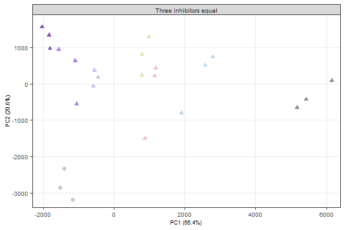
PCA visualisation of the DMSO ctrl and three mixed inhibitor treatments
# Data
fig3D_group_select <- c("DMSO ctrl", "single", "three_mix")
fig3D_data <- pca_data %>%
dplyr::filter(inhib_group %in% fig3D_group_select)
pca_legend_breaks <- c(
"Basal\nDMSO ctrl",
"Activated\nDMSO ctrl",
# "Activated\n10 uM iBTK",
# "Activated\n10 uM iSYK",
# "Activated\n10 uM iNFkB",
# "Activated\n2.5 uM of iSYK + iBTK",
# "Activated\n2.5 uM of iBTK + iNFkB",
# "Activated\n2.5 uM of iSYK + iNFkB",
# "Activated\n1 uM of iSYK + iBTK + iNFkB",
# "Activated\n2.5 uM of iSYK + iBTK + iNFkB",
# "Activated\n10 uM of iSYK + iBTK + iNFkB",
# "Basal\n10 uM of iSYK + iBTK + iNFkB",
"Activated\n5 uM iBTK + 1 uM of iSYK + iNFkB",
"Activated\n5 uM iSYK + 1 uM of iBTK + iNFkB",
"Activated\n5 uM iNFkB + 1 uM of iSYK + iBTK"
)
pca_legend_labels <- c(
"Basal\nDMSO ctrl" = "- - -\n(DMSO basal)",
"Activated\nDMSO ctrl" = "- - -\n(DMSO activated)",
# "Activated\n10 uM iBTK" = "10 - -",
# "Activated\n10 uM iSYK" = "- 10 -",
# "Activated\n10 uM iNFkB" = "- - 10",
# "Activated\n2.5 uM of iSYK + iBTK" = "2.5 2.5 -",
# "Activated\n2.5 uM of iBTK + iNFkB" = "2.5 - 2.5",
# "Activated\n2.5 uM of iSYK + iNFkB" = "- 2.5 2.5",
# "Activated\n1 uM of iSYK + iBTK + iNFkB" = "1 1 1",
# "Activated\n2.5 uM of iSYK + iBTK + iNFkB" = "2.5 2.5 2.5",
# "Activated\n10 uM of iSYK + iBTK + iNFkB" = "10 10 10",
# "Basal\n10 uM of iSYK + iBTK + iNFkB" = "10 10 10\n(basal)",
"Activated\n5 uM iBTK + 1 uM of iSYK + iNFkB" = "5 1 1",
"Activated\n5 uM iSYK + 1 uM of iBTK + iNFkB" = "1 5 1",
"Activated\n5 uM iNFkB + 1 uM of iSYK + iBTK" = "1 1 5"
)
# Figure
fig3_panelD <- ggplot(fig3D_data) +
geom_point(aes(x = PC1, y = PC2,
shape = stim_inhib,
color = stim_inhib,
alpha = inhib_group), #alpha = inhib_group
size = 2) +
scale_color_manual(values = pca_legend_values,
breaks = pca_legend_breaks,
labels = pca_legend_labels,
name = pca_legend_title) +
scale_shape_manual(values = pca_legend_shapes,
breaks = pca_legend_breaks,
labels = pca_legend_labels,
name = pca_legend_title) +
scale_alpha_manual(values = pca_legend_alpha) +
facet_wrap(vars(factor(experiment, labels = "Three inhibitors mixed")), ncol = 1) +
coord_cartesian(xlim = c(-2300, 6400), ylim = c(-3400, 1900), expand = FALSE) +
xlab(paste0("PC1 (", pca_expl_var[1], "%)")) +
ylab(paste0("PC2 (", pca_expl_var[2], "%)")) +
theme_bw() +
textsize_small +
theme(panel.grid.minor = element_blank(), legend.key.size = unit(0.4, "cm"), legend.spacing.y = unit(0.2, "cm"), legend.box.spacing = unit(0.01, "cm"), legend.position = "none", legend.justification = "left",
axis.title = element_text(size = 7), legend.title = element_text(size = 7), legend.text = element_text(size = 7), strip.text.x = element_text(margin = margin(0.1, 0, 0.1, 0, "cm"))) +
# guides(alpha = "none", shape = guide_legend(ncol = 1, byrow = TRUE), color = guide_legend(ncol = 1, byrow = TRUE))
guides(alpha = "none")
fig3_panelD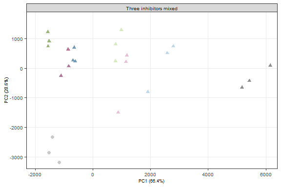
# Data
fig3leg_data <- pca_data %>%
dplyr::filter(stim_inhib != "Basal\n10 uM of iSYK + iBTK + iNFkB") %>%
add_row(stim_inhib = "Empty1", PC1 = 0, PC2 = 0, inhib_group = "Empty") %>%
add_row(stim_inhib = "Empty2", PC1 = 100, PC2 = 100, inhib_group = "Empty") %>%
add_row(stim_inhib = "Empty3", PC1 = 200, PC2 = 200, inhib_group = "Empty") %>%
add_row(stim_inhib = "Empty4", PC1 = 300, PC2 = 300, inhib_group = "Empty")
pca_legend_alpha <- c("Empty" = 0, "DMSO ctrl" = 0.8, "single" = 0.4,
"two" = 1, "three_equal" = 1, "three_mix" = 1)
pca_legend_shapes <- c(16, 17,
15,
17, 17, 17,
15,
17, 17, 17,
15,
17, 17, 17,
15,
17, 17, 17)
pca_legend_values <- c("#bdbdbd", "#737373",
"white",
"#5c9dce", "#9dce5c", "#ce5c9d",
"white",
"#5cce8d", "#8d5cce", "#ce8d5c",
"white",
"#d3bceb", "#ae82da", "#8351b6",
"white",
"#729cb9", "#9bb677", "#b6779b")
pca_legend_breaks <- c(
"Basal\nDMSO ctrl",
"Activated\nDMSO ctrl",
"Empty1",
"Activated\n10 uM iBTK",
"Activated\n10 uM iSYK",
"Activated\n10 uM iNFkB",
"Empty2",
"Activated\n2.5 uM of iSYK + iBTK",
"Activated\n2.5 uM of iBTK + iNFkB",
"Activated\n2.5 uM of iSYK + iNFkB",
"Empty3",
"Activated\n1 uM of iSYK + iBTK + iNFkB",
"Activated\n2.5 uM of iSYK + iBTK + iNFkB",
"Activated\n10 uM of iSYK + iBTK + iNFkB",
"Empty4",
"Activated\n5 uM iBTK + 1 uM of iSYK + iNFkB",
"Activated\n5 uM iSYK + 1 uM of iBTK + iNFkB",
"Activated\n5 uM iNFkB + 1 uM of iSYK + iBTK"
)
pca_legend_labels <- c(
"Basal\nDMSO ctrl" = "- - -\n(DMSO basal)",
"Activated\nDMSO ctrl" = "- - -\n(DMSO activated)",
"Empty1" = " ",
"Activated\n10 uM iBTK" = "10 - -",
"Activated\n10 uM iSYK" = "- 10 -",
"Activated\n10 uM iNFkB" = "- - 10",
"Empty2" = " ",
"Activated\n2.5 uM of iSYK + iBTK" = "2.5 2.5 -",
"Activated\n2.5 uM of iBTK + iNFkB" = "2.5 - 2.5",
"Activated\n2.5 uM of iSYK + iNFkB" = "- 2.5 2.5",
"Empty3" = " ",
"Activated\n1 uM of iSYK + iBTK + iNFkB" = "1 1 1",
"Activated\n2.5 uM of iSYK + iBTK + iNFkB" = "2.5 2.5 2.5",
"Activated\n10 uM of iSYK + iBTK + iNFkB" = "10 10 10",
"Empty4" = " ",
"Activated\n5 uM iBTK + 1 uM of iSYK + iNFkB" = "5 1 1",
"Activated\n5 uM iSYK + 1 uM of iBTK + iNFkB" = "1 5 1",
"Activated\n5 uM iNFkB + 1 uM of iSYK + iBTK" = "1 1 5"
)
# Figure
fig3_plot_legend <- ggplot(fig3leg_data) +
geom_point(aes(x = PC1, y = PC2,
shape = stim_inhib,
color = stim_inhib,
alpha = inhib_group), #alpha = inhib_group
size = 2) +
scale_color_manual(values = pca_legend_values,
breaks = pca_legend_breaks,
labels = pca_legend_labels,
name = pca_legend_title) +
scale_shape_manual(values = pca_legend_shapes,
breaks = pca_legend_breaks,
labels = pca_legend_labels,
name = pca_legend_title) +
scale_alpha_manual(values = pca_legend_alpha) +
# facet_wrap(vars(factor(experiment, labels = "Three inhibitors mixed")), ncol = 1) +
coord_cartesian(xlim = c(-2300, 6400), ylim = c(-3400, 1900), expand = FALSE) +
xlab(paste0("PC1 (", pca_expl_var[1], "%)")) +
ylab(paste0("PC2 (", pca_expl_var[2], "%)")) +
theme_bw() +
textsize_small +
theme(panel.grid.minor = element_blank(), , strip.text.x = element_text(margin = margin(0.1, 0, 0.1, 0, "cm")),
legend.key.size = unit(0.4, "cm"), legend.spacing.y = unit(0.2, "cm"), legend.box.spacing = unit(0.01, "cm"), legend.position = "right", legend.justification = "left",
axis.title = element_text(size = 7), legend.title = element_text(size = 7.25), legend.text = element_text(size = 7.25)) +
# guides(alpha = "none", shape = guide_legend(ncol = 1, byrow = TRUE), color = guide_legend(ncol = 1, byrow = TRUE))
guides(alpha = "none")
# fig3_plot_legend
fig3_legend <- as_ggplot(ggpubr::get_legend(fig3_plot_legend))
fig3_legend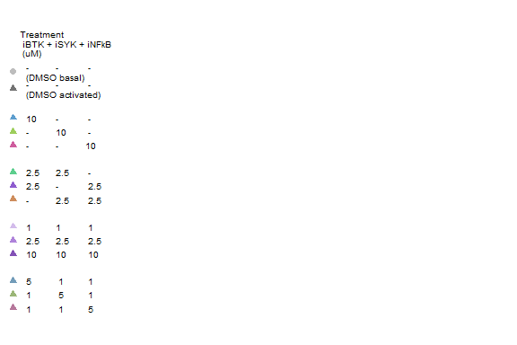
# Combine all panels of the figure
fig3_ABCD <- plot_grid(fig3_panelA, fig3_panelB, fig3_panelC, fig3_panelD, labels = PANEL_labels[c(1:4)], ncol = 2, rel_heights = c(1, 1), rel_widths = c(1, 1), label_size = 10)
fig3 <- plot_grid(fig3_ABCD, fig3_legend, nrow = 1, rel_widths = c(4, 1), label_size = 10)
fig3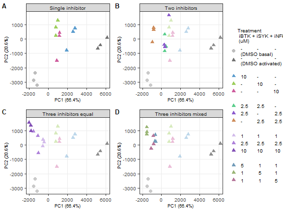
# Save figure as pdf, jpg
ggsave(
fig3,
filename = "output/figures/DLBCL_states/main_fig3.pdf",
width = 6,
height = 4.5,
units = "in",
dpi = 300
)
ggsave(
fig3,
filename = "output/figures/DLBCL_states/main_fig3.jpg",
width = 6,
height = 4.5,
units = "in",
dpi = 300
)Inhibitor combination treatments effectively induce repressed signaling states.
# Remove unnecessary files to clear up memory
rm(list = ls(pattern = "fig3"))
rm(list = ls(pattern = "png"))
rm(list = ls(pattern = "results_"))
rm(list = ls(pattern = "volc_"))
rm(list = ls(pattern = "list_"))
rm(list = ls(pattern = "names_"))
rm(list = ls(pattern = "titles_"))
rm(list = ls(pattern = "data_"))
rm(list = ls(pattern = "heat_"))
rm(list = ls(pattern = "rld"))
rm(list = ls(pattern = "pca"))
gc() used (Mb) gc trigger (Mb) max used (Mb)
Ncells 9418182 503.0 16905207 902.9 16905207 902.9
Vcells 16525260 126.1 61226380 467.2 93646971 714.5Strong network-wide disruptions of activated B-cell signaling by combination treatments.
Input:
DS113 ID-seq data
DESeq2 analysis
Cytoscape networks
# ID-seq data DS113 (counts per well/sample and mean per condition)
fig4_data_id <- read_csv("output/DS113_InhibCombiIDseq/IDseq_ann/IDseq_data_sample.csv") %>%
subset(inhibitor != "iPI3Kd" & target_nospace != "BIM" & target_nospace != "Histone_H2AX_S139" & cell_line == "HBL1") %>%
mutate(stim_inhib = paste0(stim_clean, "\n", inhib_text_new)) #%>%
# subset(inhib_new != "PBS ctrl")
fig4_mean_id <- read_csv("output/DS113_InhibCombiIDseq/IDseq_ann/IDseq_data_condition.csv") %>%
subset(inhibitor != "iPI3Kd" & target_nospace != "BIM" & target_nospace != "Histone_H2AX_S139" & cell_line == "HBL1") %>%
mutate(stim_inhib = paste0(stim_clean, "\n", inhib_text_new)) #%>%
# subset(inhib_new != "PBS ctrl")
fig4_node_info <- read_excel("output/network_visual_DLBCL/node_info2.xlsx")fig4_stim <- c("PBS", "aIg+H2O2")
fig4_label_stim <- c("Basal", "Activated")
fig4_legend_label <- "iSYK + iBTK + iNFkB"
fig4_inhib_group <- c("DMSO ctrl", "single", "two", "three_equal", "three_mix")
fig4_inhib <- c("DMSO ctrl",
"iBTK", "iSYK", "iNFkB",
"iSYK + iBTK", "iBTK + iNFkB", "iSYK +iNFkB",
"iSYK + iBTK + iNFkB")
fig4_label_inhib <- c("DMSO ctrl",
"iBTK", "iSYK", "iNFkB",
"iBTK+ iSYK", "iBTK + iNFkB", "iSYK +iNFkB",
"iBTK + iSYK + iNFkB")
fig4_conc_single <- c(0, 1, 2.5, 5, 10)
fig4_conc_all1 <- c("0 + 0 + 0 uM",
"0 + 10 + 0 uM", "10 + 0 + 0 uM", "0 + 0 + 10 uM",
"2.5 + 2.5 + 0 uM", "0 + 2.5 + 2.5 uM", "2.5 + 0 + 2.5 uM",
"1 + 1 + 1 uM", "2.5 + 2.5 + 2.5 uM", "10 + 10 + 10 uM",
"1 + 5 + 1 uM", "5 + 1 + 1 uM", "1 + 1 + 5 uM",
"10 + 10 + 10 uM (nostain)")
fig4_conc_all2 <- c("DMSO ctrl",
"10 uM iBTK", "10 uM iSYK", "10 uM iNFkB",
"2.5 uM of iSYK + iBTK", "2.5 uM of iBTK + iNFkB", "2.5 uM of iSYK + iNFkB",
"1 uM of iSYK + iBTK + iNFkB", "2.5 uM of iSYK + iBTK + iNFkB", "10 uM of iSYK + iBTK + iNFkB",
"5 uM iBTK + 1 uM of iSYK + iNFkB", "5 uM iSYK + 1 uM of iBTK + iNFkB", "5 uM iNFkB + 1 uM of iSYK + iBTK")
fig4_meta_cols <- c("plate_well", "plate", "well", "experiment", "cell_line", "stimulus", "stim_clean", "inhibitor", "inhib_new", "inhib_conc", "inhib_conc_new", "inhib_group", "iSYK_conc_uM", "iBTK_conc_uM", "iNFkB_conc_uM", "inhib_conc_text", "inhib_text_new", "stim_inhib", "replicate", "description", "descript_rep")Differential expression analysis of activation
DESeq2 analysis parameters:
DMSO ctrl samples (basal and activated)
Compensated counts (>= 1)
Model design: stim_clean (ref: Basal)
# Differential expression analysis
# Prepare data to load into DESeq dataset
# cts: dataframe with proteins as row names, wells as column names, and count data as cell values
# coldata: dataframe with wells as row names and all metadata as columns
cts <- fig4_data_id %>%
dplyr::filter(inhib_new == "DMSO ctrl" & counts >= 1) %>%
dplyr::select(target_nospace, plate_well, counts) %>%
dplyr::filter(!is.na(counts)) %>%
spread(plate_well, counts) %>%
replace(is.na(.), 0) %>%
column_to_rownames("target_nospace")
cts <- as.matrix(as.data.frame(cts))
coldata <- data.frame(plate_well = colnames(cts)) %>%
left_join(fig4_data_id[1:20]) %>%
distinct() %>%
mutate(stim_clean = factor(stim_clean, levels = fig4_label_stim)) #If necessary, make factors of some metadata columns
rownames(coldata) <- coldata$plate_well
# Create DESeq object
# First define how the model is designed. Place most important parameter last
modeldesign <- ~ stim_clean
# Then create the DESeq dataset
dds <- DESeqDataSetFromMatrix(countData = cts,
colData = coldata,
design = modeldesign)
# Define the reference samples for design parameter
dds$stim_clean <- relevel(dds$stim_clean, ref = "Basal")
# Run DESeq2:
# This function performs a default analysis through the steps:
# Estimation of size factors: estimateSizeFactors
# Estimation of dispersion: estimateDispersions
# Negative Binomial GLM fitting and Wald statistics: nbinomWaldTest
dds <- DESeq(dds, test = "Wald", fitType = "local")
DESeq_comparisons <- resultsNames(dds) # lists the coefficients
# DESeq_comparisons
# Results
results_stim <- results(dds, name = "stim_clean_Activated_vs_Basal", alpha = 0.05)
# summary(results_HBL1, padj = 0.05)
# Data transformation
# Regularized log transform
rld <- rlog(dds, blind = FALSE)
# Volcano preparation/data wrangling
# Function to prepare DESeq2 results for volcano plots
# Standard log2FC filter = log2(1.5); standard padj filter = 0.05
prep_forvulcano <- function(dataset = dataset, padj_filter = 0.05, foldchange_filter = log2(1.5)){
dataset$proteins <- rownames(dataset)
dataset$target_nospace <- rownames(dataset)
# Add a column for differential expression
dataset$diff_express <- "NO"
dataset$diff_express[dataset$log2FoldChange > foldchange_filter & dataset$padj < padj_filter] <- "UP"
dataset$diff_express[dataset$log2FoldChange < -foldchange_filter & dataset$padj < padj_filter] <- "DOWN"
# Add a column for labeling
dataset$delabel <- NA
dataset$delabel[dataset$diff_express != "NO"] <- dataset$proteins[dataset$diff_express != "NO"]
# Add Ab metadata
# dataset <- left_join(as.data.frame(dataset), meta_Abs)
return(as.data.frame(dataset))
}
# Apply function to each dataset
# Applied thresholds:
# padj < 0.05
volc_stim <- prep_forvulcano(dataset = results_stim, foldchange_filter = 0, padj_filter = 0.05) %>%
subset(diff_express == "UP" | diff_express == "DOWN") %>%
dplyr::select(c(target_nospace, log2FoldChange, padj, diff_express)) %>%
full_join(fig4_node_info) %>%
mutate(log2FoldChange = case_when(in_panel == "yes" & is.na(log2FoldChange) ~ 0,
.default = log2FoldChange),
padj = case_when(in_panel == "yes" & is.na(padj) ~ 0.051,
.default = padj)) %>%
subset(in_network == "yes" & in_panel == "yes") %>%
dplyr::rename(states_ActvsBas_log2FC = log2FoldChange,
states_ActvsBas_padj = padj,
states_ActvsBas_DE = diff_express)
# write.csv(volc_stim, file = "output/network_visual_paper/node_info_combi_ActvsBas.csv", row.names = F, na = "")Differential expression analysis of 9inhibition in activated HBL1 cells
DESeq2 analysis parameters:
all inhibitor treatments + DMSO ctrl samples (activated)
Compensated counts (>= 1)
Model design: inhib_text_new (ref: DMSO ctrl)
# Differential expression analysis
# Prepare data to load into DESeq dataset
# cts: dataframe with proteins as row names, wells as column names, and count data as cell values
# coldata: dataframe with wells as row names and all metadata as columns
cts <- fig4_data_id %>%
dplyr::filter(stim_clean == "Activated" & counts >= 1) %>%
dplyr::select(target_nospace, plate_well, counts) %>%
dplyr::filter(!is.na(counts)) %>%
spread(plate_well, counts) %>%
replace(is.na(.), 0) %>%
column_to_rownames("target_nospace")
cts <- as.matrix(as.data.frame(cts))
coldata <- data.frame(plate_well = colnames(cts)) %>%
left_join(fig4_data_id[c(1:20, 32)]) %>%
distinct() %>%
mutate(stim_clean = factor(stim_clean, levels = fig4_label_stim),
inhib_text_new = factor(inhib_text_new, levels = fig4_conc_all2)) #If necessary, make factors of some metadata columns
rownames(coldata) <- coldata$plate_well
# Create DESeq object
# First define how the model is designed. Place most important parameter last
modeldesign <- ~ inhib_text_new
# Then create the DESeq dataset
dds <- DESeqDataSetFromMatrix(countData = cts,
colData = coldata,
design = modeldesign)
# Define the reference samples for design parameter
dds$inhib_text_new <- relevel(dds$inhib_text_new, ref = "DMSO ctrl")
# Run DESeq2:
# This function performs a default analysis through the steps:
# Estimation of size factors: estimateSizeFactors
# Estimation of dispersion: estimateDispersions
# Negative Binomial GLM fitting and Wald statistics: nbinomWaldTest
dds <- DESeq(dds, test = "Wald", fitType = "local")
DESeq_comparisons <- resultsNames(dds) # lists the coefficients
# DESeq_comparisons
# Results
results_iBTK <- results(dds, name = "inhib_text_new_10.uM.iBTK_vs_DMSO.ctrl", alpha = 0.05)
results_iSYK <- results(dds, name = "inhib_text_new_10.uM.iSYK_vs_DMSO.ctrl", alpha = 0.05)
results_iNFkB <- results(dds, name = "inhib_text_new_10.uM.iNFkB_vs_DMSO.ctrl", alpha = 0.05)
results_iBTKiSYK <- results(dds, name = "inhib_text_new_2.5.uM.of.iSYK...iBTK_vs_DMSO.ctrl", alpha = 0.05)
results_equal1 <- results(dds, name = "inhib_text_new_1.uM.of.iSYK...iBTK...iNFkB_vs_DMSO.ctrl", alpha = 0.05)
results_equal10 <- results(dds, name = "inhib_text_new_10.uM.of.iSYK...iBTK...iNFkB_vs_DMSO.ctrl", alpha = 0.05)
results_threeiSYK <- results(dds, name = "inhib_text_new_5.uM.iSYK...1.uM.of.iBTK...iNFkB_vs_DMSO.ctrl", alpha = 0.05)
# list_results <- list(results_iSYK100_stim, results_iBTK100_stim, results_iNFkB100_stim)
# summary(results_HBL1, padj = 0.05)
# Data transformation
# Regularized log transform
rld <- rlog(dds, blind = FALSE)
# Volcano preparation/data wrangling
# Function to prepare DESeq2 results for volcano plots
# Standard log2FC filter = log2(1.5); standard padj filter = 0.05
prep_forvulcano <- function(dataset = dataset, padj_filter = 0.05, foldchange_filter = log2(1.5)){
dataset$proteins <- rownames(dataset)
dataset$target_nospace <- rownames(dataset)
# Add a column for differential expression
dataset$diff_express <- "NO"
dataset$diff_express[dataset$log2FoldChange > foldchange_filter & dataset$padj < padj_filter] <- "UP"
dataset$diff_express[dataset$log2FoldChange < -foldchange_filter & dataset$padj < padj_filter] <- "DOWN"
# Add a column for labeling
dataset$delabel <- NA
dataset$delabel[dataset$diff_express != "NO"] <- dataset$proteins[dataset$diff_express != "NO"]
# Add Ab metadata
# dataset <- left_join(as.data.frame(dataset), meta_Abs)
return(as.data.frame(dataset))
}
# Apply function to each dataset
# Applied thresholds:
# padj < 0.05
volc_iBTK <- prep_forvulcano(dataset = results_iBTK, foldchange_filter = 0, padj_filter = 0.05) %>%
subset(diff_express == "UP" | diff_express == "DOWN") %>%
dplyr::select(c(target_nospace, log2FoldChange, padj, diff_express)) %>%
full_join(fig4_node_info) %>%
mutate(log2FoldChange = case_when(in_panel == "yes" & is.na(log2FoldChange) ~ 0,
.default = log2FoldChange),
padj = case_when(in_panel == "yes" & is.na(padj) ~ 0.051,
.default = padj)) %>%
subset(in_network == "yes" & in_panel == "yes") %>%
dplyr::rename(states_iBTKvsDMSO_combi_log2FC = log2FoldChange,
states_iBTKvsDMSO_combi_padj = padj,
states_iBTKvsDMSO_combi_DE = diff_express)
# write.csv(volc_iBTK, file = "output/network_visual_paper/node_info_combi_iBTKvsDMSOctrl.csv", row.names = F, na = "")
volc_iSYK <- prep_forvulcano(dataset = results_iSYK, foldchange_filter = 0, padj_filter = 0.05) %>%
subset(diff_express == "UP" | diff_express == "DOWN") %>%
dplyr::select(c(target_nospace, log2FoldChange, padj, diff_express)) %>%
full_join(fig4_node_info) %>%
mutate(log2FoldChange = case_when(in_panel == "yes" & is.na(log2FoldChange) ~ 0,
.default = log2FoldChange),
padj = case_when(in_panel == "yes" & is.na(padj) ~ 0.051,
.default = padj)) %>%
subset(in_network == "yes" & in_panel == "yes") %>%
dplyr::rename(states_iSYKvsDMSO_combi_log2FC = log2FoldChange,
states_iSYKvsDMSO_combi_padj = padj,
states_iSYKvsDMSO_combi_DE = diff_express)
# write.csv(volc_iSYK, file = "output/network_visual_paper/node_info_combi_iSYKvsDMSOctrl.csv", row.names = F, na = "")
volc_iNFkB <- prep_forvulcano(dataset = results_iNFkB, foldchange_filter = 0, padj_filter = 0.05) %>%
subset(diff_express == "UP" | diff_express == "DOWN") %>%
dplyr::select(c(target_nospace, log2FoldChange, padj, diff_express)) %>%
full_join(fig4_node_info) %>%
mutate(log2FoldChange = case_when(in_panel == "yes" & is.na(log2FoldChange) ~ 0,
.default = log2FoldChange),
padj = case_when(in_panel == "yes" & is.na(padj) ~ 0.051,
.default = padj)) %>%
subset(in_network == "yes" & in_panel == "yes") %>%
dplyr::rename(states_iNFkBvsDMSO_combi_log2FC = log2FoldChange,
states_iNFkBvsDMSO_combi_padj = padj,
states_iNFkBvsDMSO_combi_DE = diff_express)
# write.csv(volc_iNFkB, file = "output/network_visual_paper/node_info_combi_iNFkBvsDMSOctrl.csv", row.names = F, na = "")
volc_iBTKiSYK <- prep_forvulcano(dataset = results_iBTKiSYK, foldchange_filter = 0, padj_filter = 0.05) %>%
subset(diff_express == "UP" | diff_express == "DOWN") %>%
dplyr::select(c(target_nospace, log2FoldChange, padj, diff_express)) %>%
full_join(fig4_node_info) %>%
mutate(log2FoldChange = case_when(in_panel == "yes" & is.na(log2FoldChange) ~ 0,
.default = log2FoldChange),
padj = case_when(in_panel == "yes" & is.na(padj) ~ 0.051,
.default = padj)) %>%
subset(in_network == "yes" & in_panel == "yes") %>%
dplyr::rename(states_iBTKiSYKvsDMSO_combi_log2FC = log2FoldChange,
states_iBTKiSYKvsDMSO_combi_padj = padj,
states_iBTKiSYKvsDMSO_combi_DE = diff_express)
# write.csv(volc_iBTKiSYK, file = "output/network_visual_paper/node_info_combi_iBTKiSYKvsDMSOctrl.csv", row.names = F, na = "")
volc_equal1 <- prep_forvulcano(dataset = results_equal1, foldchange_filter = 0, padj_filter = 0.05) %>%
subset(diff_express == "UP" | diff_express == "DOWN") %>%
dplyr::select(c(target_nospace, log2FoldChange, padj, diff_express)) %>%
full_join(fig4_node_info) %>%
mutate(log2FoldChange = case_when(in_panel == "yes" & is.na(log2FoldChange) ~ 0,
.default = log2FoldChange),
padj = case_when(in_panel == "yes" & is.na(padj) ~ 0.051,
.default = padj)) %>%
subset(in_network == "yes" & in_panel == "yes") %>%
dplyr::rename(states_equal1vsDMSO_combi_log2FC = log2FoldChange,
states_equal1vsDMSO_combi_padj = padj,
states_equal1vsDMSO_combi_DE = diff_express)
# write.csv(volc_equal1, file = "output/network_visual_paper/node_info_combi_equal1vsDMSOctrl.csv", row.names = F, na = "")
volc_equal10 <- prep_forvulcano(dataset = results_equal10, foldchange_filter = 0, padj_filter = 0.05) %>%
subset(diff_express == "UP" | diff_express == "DOWN") %>%
dplyr::select(c(target_nospace, log2FoldChange, padj, diff_express)) %>%
full_join(fig4_node_info) %>%
mutate(log2FoldChange = case_when(in_panel == "yes" & is.na(log2FoldChange) ~ 0,
.default = log2FoldChange),
padj = case_when(in_panel == "yes" & is.na(padj) ~ 0.051,
.default = padj)) %>%
subset(in_network == "yes" & in_panel == "yes") %>%
dplyr::rename(states_equal10vsDMSO_combi_log2FC = log2FoldChange,
states_equal10vsDMSO_combi_padj = padj,
states_equal10vsDMSO_combi_DE = diff_express)
# write.csv(volc_equal10, file = "output/network_visual_paper/node_info_combi_equal10vsDMSOctrl.csv", row.names = F, na = "")
volc_threeiSYK <- prep_forvulcano(dataset = results_threeiSYK, foldchange_filter = 0, padj_filter = 0.05) %>%
subset(diff_express == "UP" | diff_express == "DOWN") %>%
dplyr::select(c(target_nospace, log2FoldChange, padj, diff_express)) %>%
full_join(fig4_node_info) %>%
mutate(log2FoldChange = case_when(in_panel == "yes" & is.na(log2FoldChange) ~ 0,
.default = log2FoldChange),
padj = case_when(in_panel == "yes" & is.na(padj) ~ 0.051,
.default = padj)) %>%
subset(in_network == "yes" & in_panel == "yes") %>%
dplyr::rename(states_threeiSYKvsDMSO_combi_log2FC = log2FoldChange,
states_threeiSYKvsDMSO_combi_padj = padj,
states_threeiSYKvsDMSO_combi_DE = diff_express)
# write.csv(volc_threeiSYK, file = "output/network_visual_paper/node_info_combi_threeiSYKvsDMSOctrl.csv", row.names = F, na = "")fig4_DESeq2_node_info <- list(volc_stim, volc_iBTK, volc_iSYK, volc_iNFkB, volc_iBTKiSYK, volc_equal1, volc_equal10, volc_threeiSYK) %>%
purrr::reduce(full_join)
write.csv(fig4_DESeq2_node_info, file = "output/network_visual_DLBCL/data_node_info_combi_all.csv", row.names = F, na = "")# # Placeholder
# fig4_panelA <- ggplot() +
# geom_blank() +
# scale_x_continuous(limits = c(0, 10)) +
# scale_y_continuous(limits = c(0, 10)) +
# labs(title = "Network projections of combination treatment experiment") +
# theme_bw() +
# theme(axis.text = element_text(color = "white"),
# axis.ticks = element_blank(),
# panel.grid = element_blank()) +
# textsize_small
# fig4_panelA
# Active
fig4_panelA <- magick::image_read("output/figures/non_R_figs/Cytoscape_states_ActvsBas.png") %>%
magick::image_border(color = "black", geometry = "1x1") %>%
magick::image_ggplot(interpolate = TRUE) +
ggtitle(" Activated vs basal") +
textsize_small +
theme(plot.title = element_text(size = 8))
fig4_panelA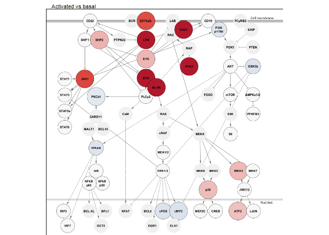
# legend
fig4_network_legend <- magick::image_read("output/figures/non_R_figs/legend_network_projections.png") %>%
# magick::image_border(color = "black", geometry = "1x1") %>%
magick::image_ggplot(interpolate = TRUE) +
# ggtitle("\n") +
textsize_small
# fig4_network_legend# iBTK
fig4_panelB <- magick::image_read("output/figures/non_R_figs/Cytoscape_states_SingleiBTKvsDMSO.png") %>%
magick::image_border(color = "black", geometry = "1x1") %>%
magick::image_ggplot(interpolate = TRUE) +
ggtitle(" 10 uM iBTK vs DMSO ctrl (act. cells)") +
textsize_small +
theme(plot.title = element_text(size = 8))
fig4_panelB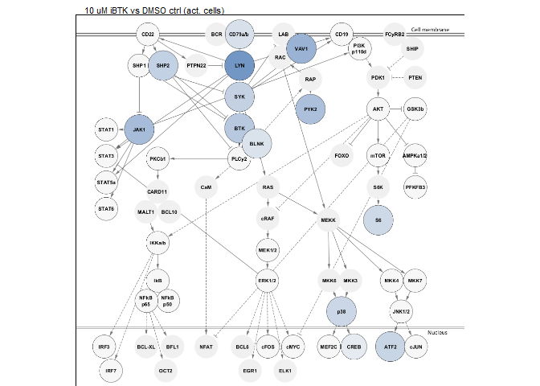
# equal 1
fig4_panelC <- magick::image_read("output/figures/non_R_figs/Cytoscape_states_Equal1vsDMSO.png") %>%
magick::image_border(color = "black", geometry = "1x1") %>%
magick::image_ggplot() +
ggtitle(" 1 uM of each vs DMSO ctrl (act. cells)") +
textsize_small +
theme(plot.title = element_text(size = 8))
fig4_panelC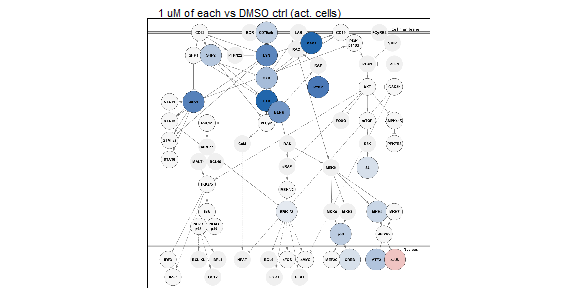
# # equal 10
# fig4_panelD <- magick::image_read("output/figures/non_R_figs/Cytoscape_states_Equal10vsDMSO.png") %>%
# magick::image_border(color = "black", geometry = "1x1") %>%
# magick::image_ggplot() +
# ggtitle(" 10 uM of each vs DMSO ctrl") +
# textsize_small +
# theme(plot.title = element_text(size = 8))
# fig4_panelD
# Three iSYK
fig4_panelD <- magick::image_read("output/figures/non_R_figs/Cytoscape_states_ThreeiSYKvsDMSO.png") %>%
magick::image_border(color = "black", geometry = "1x1") %>%
magick::image_ggplot() +
ggtitle(" 5 uM iSYK + 1 uM iBTK + iNFkB vs DMSO ctrl (act. cells)") +
textsize_small +
theme(plot.title = element_text(size = 8))
fig4_panelD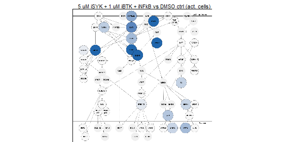
#
# # 2.5 iBTK + iSYK
# fig4_panelD_alt2 <- magick::image_read("output/figures/non_R_figs/Cytoscape_states_iBTKiSYKvsDMSO.png") %>%
# magick::image_border(color = "black", geometry = "1x1") %>%
# magick::image_ggplot() +
# ggtitle(" 2.5 uM iBTK + iSYK vs DMSO ctrl") +
# textsize_small +
# theme(plot.title = element_text(size = 8))
# fig4_panelD_alt2# Combine all panels of the figure
fig4_networks <- plot_grid(fig4_panelA, fig4_panelB, fig4_panelC, fig4_panelD, labels = PANEL_labels[c(1:4)], ncol = 2, rel_widths = c(1, 1), rel_heights = c(1, 1), label_size = 10)
fig4 <- plot_grid(fig4_networks, fig4_network_legend, ncol = 1, rel_heights = c(10, 1))
fig4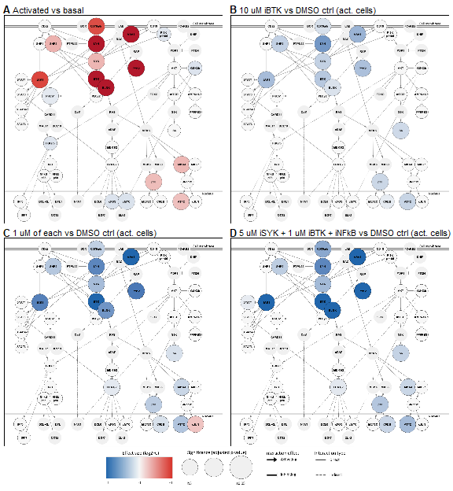
# fig4_alt <- plot_grid(fig4_panelD_alt1, fig4_panelD_alt2, ncol = 2, rel_widths = c(1, 1))
# fig4_test <- plot_grid(fig4, fig4_alt, ncol = 1, rel_heights = c(3, 1))
# Save figure as pdf, jpg
ggsave(
fig4,
filename = "output/figures/DLBCL_states/main_fig4.pdf",
width = 6,
height = 6.5,
units = "in",
dpi = 300
)
ggsave(
fig4,
filename = "output/figures/DLBCL_states/main_fig4.jpg",
width = 6,
height = 6.5,
units = "in",
dpi = 300
)Strong network-wide disruptions of activated B-cell signaling by combination treatments.
# Remove unnecessary files to clear up memory
rm(list = ls(pattern = "fig4"))
rm(list = ls(pattern = "png"))
rm(list = ls(pattern = "results_"))
rm(list = ls(pattern = "volc_"))
rm(list = ls(pattern = "list_"))
rm(list = ls(pattern = "names_"))
rm(list = ls(pattern = "titles_"))
rm(list = ls(pattern = "data_"))
rm(list = ls(pattern = "heat_"))
rm(list = ls(pattern = "rld"))
rm(list = ls(pattern = "pca"))
gc() used (Mb) gc trigger (Mb) max used (Mb)
Ncells 9490182 506.9 16905207 902.9 16905207 902.9
Vcells 20625132 157.4 61226380 467.2 93646971 714.5Inhibition of the B-cell network results in a transition from an activated signaling state to a repressed state.
Input:
# Placeholder
fig5_panelA_place <- ggplot() +
geom_blank() +
scale_x_continuous(limits = c(0, 10)) +
scale_y_continuous(limits = c(0, 10)) +
labs(title = "Summary figure") +
theme_bw() +
theme(axis.text.x = element_blank(),
axis.text.y = element_blank(),
axis.ticks = element_blank(),
panel.grid = element_blank()) +
textsize_small
# fig5_panelA_place
# PNG
fig5_panelA <- magick::image_read("output/figures/non_R_figs/signaling_states_summary.png") %>%
magick::image_ggplot()
fig5_panelA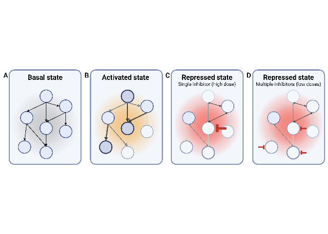
# Combine all panels of the figure
fig5_panelA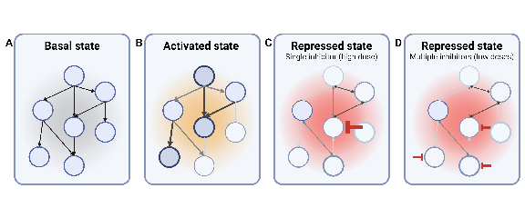
# Save figure as pdf, jpg
# ggsave(
# fig5,
# filename = "output/figures/DLBCL_states/main_fig5.pdf",
# width = 6,
# height = 2.5,
# units = "in",
# dpi = 300
# )
ggsave(
fig5_panelA_place,
filename = "output/figures/DLBCL_states/main_fig5_place.jpg",
width = 6,
height = 2.5,
units = "in",
dpi = 300
)Inhibition of the B-cell network results in a transition from an activated signaling state to a repressed state.
# Remove unnecessary files to clear up memory
rm(list = ls(pattern = "fig5"))
rm(list = ls(pattern = "png"))
rm(list = ls(pattern = "results_"))
rm(list = ls(pattern = "volc_"))
rm(list = ls(pattern = "list_"))
rm(list = ls(pattern = "names_"))
rm(list = ls(pattern = "titles_"))
rm(list = ls(pattern = "data_"))
rm(list = ls(pattern = "heat_"))
rm(list = ls(pattern = "rld"))
rm(list = ls(pattern = "pca"))
gc() used (Mb) gc trigger (Mb) max used (Mb)
Ncells 9467486 505.7 16905207 902.9 16905207 902.9
Vcells 16691034 127.4 61226380 467.2 93646971 714.5Figure title.
Input: - BioRender schematic figures
… phosphoflow data
… ID-seq data
# Placeholder
fig0_panelA <- ggplot() +
geom_blank() +
scale_x_continuous(limits = c(0, 10)) +
scale_y_continuous(limits = c(0, 10)) +
# labs(title = "BCR signaling network") +
theme_bw() +
theme(axis.text = element_text(color = "white"),
axis.ticks = element_blank(),
panel.grid = element_blank()) +
textsize_small
# fig0_panelA
# PNG
png_fig0 <- image_read("output/figures/non_R_figs/xxx.png") %>%
image_ggplot()
# png_fig0# Select data
# Figure# Select data
# Figure# Combine all panels of the figure
fig0 <- plot_grid(panelA, panelB, labels = panel_labels[c(1, 2)], ncol = 1, rel_heights = c(1, 1), label_size = 10)
fig0
# Save figure as pdf, jpg
# ggsave(
# fig0,
# filename = "output/figures/DLBCL_states/main_fig0.pdf",
# width = 6,
# height = 3,
# units = "in",
# dpi = 300
# )
ggsave(
fig0,
filename = "output/figures/DLBCL_states/main_fig0.jpg",
width = 6,
height = 3,
units = "in",
dpi = 300
)Figure title.
# Remove unnecessary files to clear up memory
rm(list = ls(pattern = "fig0"))
rm(list = ls(pattern = "png"))
rm(list = ls(pattern = "results_"))
rm(list = ls(pattern = "volc_"))
rm(list = ls(pattern = "list_"))
rm(list = ls(pattern = "names_"))
rm(list = ls(pattern = "titles_"))
rm(list = ls(pattern = "data_"))
rm(list = ls(pattern = "heat_"))
rm(list = ls(pattern = "rld"))
rm(list = ls(pattern = "pca"))
gc()
sessionInfo()R version 4.4.1 (2024-06-14 ucrt)
Platform: x86_64-w64-mingw32/x64
Running under: Windows 10 x64 (build 19045)
Matrix products: default
locale:
[1] LC_COLLATE=English_Netherlands.utf8 LC_CTYPE=English_Netherlands.utf8
[3] LC_MONETARY=English_Netherlands.utf8 LC_NUMERIC=C
[5] LC_TIME=English_Netherlands.utf8
time zone: Europe/Amsterdam
tzcode source: internal
attached base packages:
[1] grid stats4 stats graphics grDevices utils datasets
[8] methods base
other attached packages:
[1] ashr_2.2-63 apeglm_1.26.1
[3] MASS_7.3-60.2 ggbreak_0.1.2
[5] geomtextpath_0.1.4 ggh4x_0.2.8
[7] cowplot_1.1.3 patchwork_1.2.0
[9] greekLetters_1.0.2 ggpubr_0.6.0
[11] ggrepel_0.9.5 scales_1.3.0
[13] ggthemes_5.1.0 RColorBrewer_1.1-3
[15] scico_1.5.0 viridis_0.6.5
[17] viridisLite_0.4.2 gridExtra_2.3
[19] mmtable2_0.1.3 gt_0.10.1
[21] ggvenn_0.1.10 rgl_1.3.1
[23] plotly_4.10.4 ggcorrplot_0.1.4.1
[25] corrplot_0.92 umap_0.2.10.0
[27] ggplotify_0.1.2 dendsort_0.3.4
[29] vsn_3.72.0 ComplexHeatmap_2.20.0
[31] platetools_0.1.7 kableExtra_1.4.0
[33] DESeq2_1.44.0 SummarizedExperiment_1.34.0
[35] Biobase_2.64.0 MatrixGenerics_1.16.0
[37] matrixStats_1.3.0 GenomicRanges_1.56.1
[39] GenomeInfoDb_1.40.1 IRanges_2.38.0
[41] S4Vectors_0.42.0 BiocGenerics_0.50.0
[43] Seurat_5.1.0 SeuratObject_5.0.2
[45] sp_2.1-4 rstatix_0.7.2
[47] factoextra_1.0.7 FactoMineR_2.11
[49] readxl_1.4.3 Matrix_1.7-0
[51] lubridate_1.9.3 forcats_1.0.0
[53] stringr_1.5.1 dplyr_1.1.4
[55] purrr_1.0.2 readr_2.1.5
[57] tidyr_1.3.1 tibble_3.2.1
[59] ggplot2_3.5.1 tidyverse_2.0.0
[61] workflowr_1.7.1
loaded via a namespace (and not attached):
[1] vroom_1.6.5 goftest_1.2-3 DT_0.33
[4] TH.data_1.1-2 vctrs_0.6.5 spatstat.random_3.2-3
[7] digest_0.6.36 png_0.1-8 shape_1.4.6.1
[10] git2r_0.33.0 mixsqp_0.3-54 deldir_2.0-4
[13] parallelly_1.37.1 magick_2.8.3 SQUAREM_2021.1
[16] reshape2_1.4.4 httpuv_1.6.15 foreach_1.5.2
[19] withr_3.0.0 xfun_0.45 ggfun_0.1.5
[22] survival_3.6-4 memoise_2.0.1 emmeans_1.10.2
[25] systemfonts_1.1.0 ragg_1.3.2 zoo_1.8-12
[28] GlobalOptions_0.1.2 pbapply_1.7-2 promises_1.3.0
[31] scatterplot3d_0.3-44 httr_1.4.7 globals_0.16.3
[34] fitdistrplus_1.1-11 ps_1.7.6 rstudioapi_0.16.0
[37] UCSC.utils_1.0.0 miniUI_0.1.1.1 generics_0.1.3
[40] base64enc_0.1-3 processx_3.8.4 zlibbioc_1.50.0
[43] polyclip_1.10-6 GenomeInfoDbData_1.2.12 SparseArray_1.4.8
[46] xtable_1.8-4 doParallel_1.0.17 evaluate_0.24.0
[49] S4Arrays_1.4.1 preprocessCore_1.66.0 hms_1.1.3
[52] irlba_2.3.5.1 colorspace_2.1-0 ROCR_1.0-11
[55] reticulate_1.38.0 spatstat.data_3.1-2 magrittr_2.0.3
[58] lmtest_0.9-40 later_1.3.2 lattice_0.22-6
[61] spatstat.geom_3.2-9 future.apply_1.11.2 getPass_0.2-4
[64] scattermore_1.2 RcppAnnoy_0.0.22 pillar_1.9.0
[67] nlme_3.1-164 iterators_1.0.14 compiler_4.4.1
[70] RSpectra_0.16-1 stringi_1.8.4 tensor_1.5
[73] plyr_1.8.9 crayon_1.5.3 abind_1.4-5
[76] truncnorm_1.0-9 gridGraphics_0.5-1 emdbook_1.3.13
[79] locfit_1.5-9.10 bit_4.0.5 sandwich_3.1-0
[82] whisker_0.4.1 codetools_0.2-20 multcomp_1.4-25
[85] textshaping_0.4.0 openssl_2.2.0 bslib_0.7.0
[88] GetoptLong_1.0.5 mime_0.12 splines_4.4.1
[91] circlize_0.4.16 Rcpp_1.0.12 fastDummies_1.7.3
[94] cellranger_1.1.0 Rttf2pt1_1.3.12 leaps_3.2
[97] knitr_1.47 utf8_1.2.4 clue_0.3-65
[100] fs_1.6.4 listenv_0.9.1 ggsignif_0.6.4
[103] estimability_1.5.1 callr_3.7.6 statmod_1.5.0
[106] tzdb_0.4.0 svglite_2.1.3 pkgconfig_2.0.3
[109] tools_4.4.1 cachem_1.1.0 numDeriv_2016.8-1.1
[112] fastmap_1.2.0 rmarkdown_2.27 ica_1.0-3
[115] broom_1.0.6 sass_0.4.9 coda_0.19-4.1
[118] BiocManager_1.30.23 dotCall64_1.1-1 carData_3.0-5
[121] RANN_2.6.1 farver_2.1.2 yaml_2.3.8
[124] cli_3.6.3 leiden_0.4.3.1 lifecycle_1.0.4
[127] askpass_1.2.0 uwot_0.2.2 mvtnorm_1.2-5
[130] backports_1.5.0 BiocParallel_1.38.0 timechange_0.3.0
[133] gtable_0.3.5 rjson_0.2.21 ggridges_0.5.6
[136] progressr_0.14.0 parallel_4.4.1 limma_3.60.3
[139] jsonlite_1.8.8 RcppHNSW_0.6.0 bit64_4.0.5
[142] multcompView_0.1-10 assertthat_0.2.1 Rtsne_0.17
[145] yulab.utils_0.1.4 spatstat.utils_3.0-5 bdsmatrix_1.3-7
[148] highr_0.11 jquerylib_0.1.4 lazyeval_0.2.2
[151] shiny_1.8.1.1 htmltools_0.5.8.1 affy_1.82.0
[154] sctransform_0.4.1 glue_1.7.0 spam_2.10-0
[157] XVector_0.44.0 rprojroot_2.0.4 flashClust_1.01-2
[160] invgamma_1.1 igraph_2.0.3 extrafontdb_1.0
[163] R6_2.5.1 labeling_0.4.3 bbmle_1.0.25.1
[166] cluster_2.1.6 aplot_0.2.3 DelayedArray_0.30.1
[169] tidyselect_1.2.1 xml2_1.3.6 car_3.1-2
[172] future_1.33.2 munsell_0.5.1 KernSmooth_2.23-24
[175] affyio_1.74.0 data.table_1.15.4 htmlwidgets_1.6.4
[178] rlang_1.1.4 spatstat.sparse_3.1-0 extrafont_0.19
[181] spatstat.explore_3.2-7 fansi_1.0.6